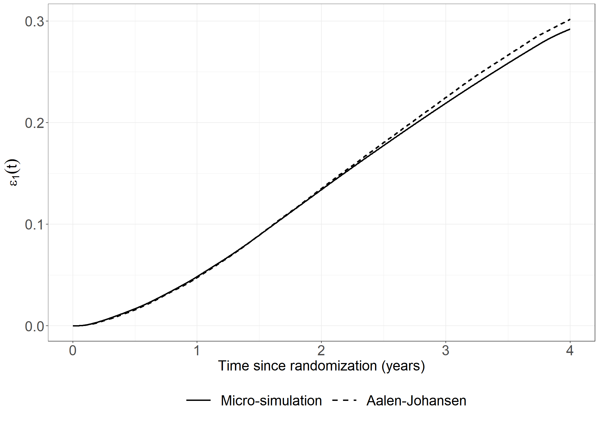
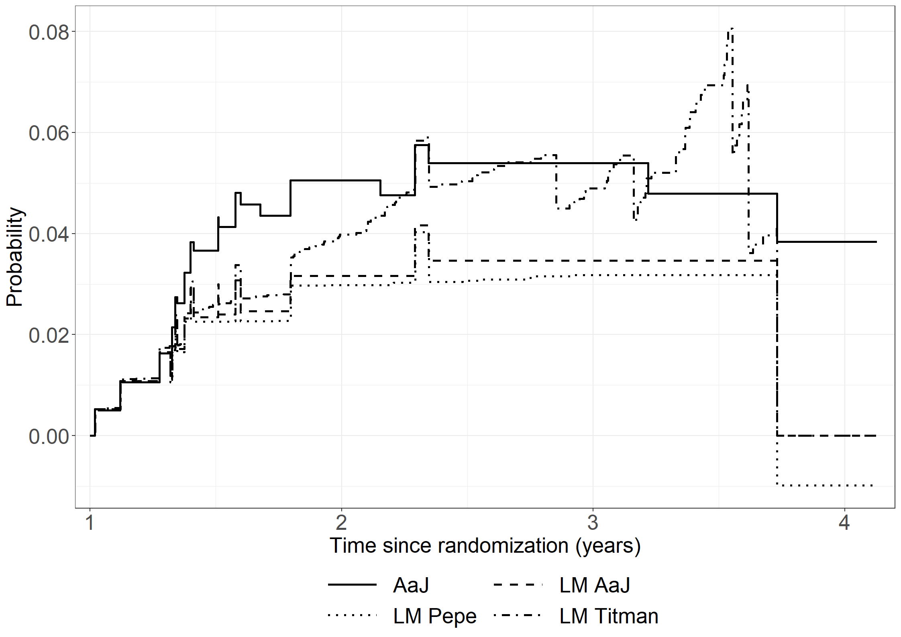
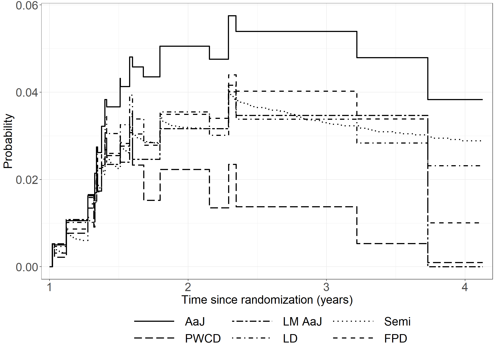

Code show/hide
pbc3 <- read.csv("data/pbc3.csv")
pbc3$log2bili <- with(pbc3, log2(bili))pbc3 <- read.csv("data/pbc3.csv")
pbc3$log2bili <- with(pbc3, log2(bili))proc import out=pbc3
datafile="data/pbc3.csv"
dbms=csv replace;
run;
data pbc3;
set pbc3;
log2bili=log2(bili);
years=days/365.25;
run;library(mets)
pbcny <- subset(pbc3, !is.na(alb))
# COLUMN 1: t0 = 2
dirbin2tment <- binreg(Event(days, status) ~ tment,
data = pbc3, cause = 2, time = 2 * 365.25, cens.code = 0)
summary(dirbin2tment)
n events
349 33
349 clusters
coeffients:
Estimate Std.Err 2.5% 97.5% P-value
(Intercept) -2.209708 0.264482 -2.728083 -1.691333 0.000
tment 0.093432 0.370632 -0.632994 0.819858 0.801
exp(coeffients):
Estimate 2.5% 97.5%
(Intercept) 0.109733 0.065344 0.1843
tment 1.097936 0.530999 2.2702dirbin2 <- binreg(Event(days, status) ~ tment + I(alb - 40) + I(log2(bili) - 4.6),
data = pbcny, cause = 2, time = 2 * 365.25, cens.code = 0)
summary(dirbin2)
n events
343 33
343 clusters
coeffients:
Estimate Std.Err 2.5% 97.5% P-value
(Intercept) -2.931782 0.353853 -3.625322 -2.238242 0.0000
tment -0.462652 0.438797 -1.322677 0.397374 0.2917
I(alb - 40) -0.147338 0.036961 -0.219780 -0.074897 0.0001
I(log2(bili) - 4.6) 0.639318 0.151149 0.343071 0.935564 0.0000
exp(coeffients):
Estimate 2.5% 97.5%
(Intercept) 0.053302 0.026641 0.1066
tment 0.629612 0.266421 1.4879
I(alb - 40) 0.863002 0.802695 0.9278
I(log2(bili) - 4.6) 1.895187 1.409269 2.5487library(timereg)
# COLUMN 2: t1,t2,t3 = 1,2,3
timereg3 <- comp.risk(
Event(days, status) ~ const(tment),
data = pbc3, cause = 2, times = c(1,2,3) * 365.25,
model = "logistic", resample.iid = 1, n.sim = 100, monotone = 1)
summary(timereg3)$coefCompeting risks Model
Test for nonparametric terms
Test for non-significant effects
Supremum-test of significance p-value H_0: B(t)=0
(Intercept) 8.96 0
Test for time invariant effects
Kolmogorov-Smirnov test p-value H_0:constant effect
(Intercept) 0.505 0
Cramer von Mises test p-value H_0:constant effect
(Intercept) 94.3 0
Parametric terms :
Coef. SE Robust SE z P-val lower2.5% upper97.5%
const(tment) -0.0304 0.323 0.323 -0.0941 0.925 -0.663 0.603
NULLtimereg3 <- comp.risk(
Event(days, status) ~ const(tment) + const(I(alb - 40)) + const(I(log2(bili) - 4.6)),
data = pbcny, cause = 2, times = c(1,2,3) * 365.25,
model = "logistic", resample.iid = 1, n.sim = 100, monotone = 1)
summary(timereg3)$coefCompeting risks Model
Test for nonparametric terms
Test for non-significant effects
Supremum-test of significance p-value H_0: B(t)=0
(Intercept) 9.49 0
Test for time invariant effects
Kolmogorov-Smirnov test p-value H_0:constant effect
(Intercept) 0.651 0
Cramer von Mises test p-value H_0:constant effect
(Intercept) 156 0
Parametric terms :
Coef. SE Robust SE z P-val lower2.5%
const(tment) -0.520 0.3730 0.3730 -1.39 1.63e-01 -1.250
const(I(alb - 40)) -0.125 0.0349 0.0349 -3.58 3.45e-04 -0.193
const(I(log2(bili) - 4.6)) 0.579 0.1280 0.1280 4.54 5.74e-06 0.328
upper97.5%
const(tment) 0.2110
const(I(alb - 40)) -0.0566
const(I(log2(bili) - 4.6)) 0.8300
NULLThere is currently no implementation of direct binomial regression in SAS.
library(timereg)
library(ggplot2)
theme_general <- theme_bw() +
theme(legend.position = "bottom",
text = element_text(size = 20),
axis.text.x = element_text(size = 20),
axis.text.y = element_text(size = 20))
# Make Cox model fit
pbc3$years <- pbc3$days/365.25
fit <- cox.aalen(Surv(years, status != 0) ~ prop(tment) + prop(alb) + prop(bili),
data = pbc3, n.sim = 0,
residuals = 1)
# Cumulative martingale residuals
set.seed(061166)
cum_res <- cum.residuals(fit, pbc3, cum.resid=1, max.point.func = 50, n.sim = 1000)
cumresdata_alb <- data.frame(
alb = unname(cum_res$proc.cumz[[1]][,1]),
cum_mg_res = unname(cum_res$proc.cumz[[1]][,2])
)
cumresdata_albsim <- data.frame(
alb = rep(unname(cum_res$proc.cumz[[1]][,1]),times = 50),
cum_mg_res = c(cum_res$sim.test.proccumz[[1]]),
sim = rep(1:50,each = length(unname(cum_res$proc.cumz[[1]][,1])))
)
fig5.12 <- ggplot(aes(x = alb, y = cum_mg_res), data = cumresdata_alb) +
geom_step(aes(x = alb, y = cum_mg_res, group = sim),
color = "grey", size = 0.8, data = cumresdata_albsim) +
geom_step(size = 1) +
xlab("Albumin") +
ylab("Cumulative martingale residuals") +
scale_x_continuous(expand = expansion(mult = c(0.03, 0.05))) +
scale_y_continuous(expand = expansion(mult = c(0.03, 0.05))) +
theme_general
fig5.12
# p-value
cum_res$pval.test[1]prop(alb)
0.459 ods graphis on;
proc phreg data=pbc3;
class tment (ref='0');
model years*status(0)=tment alb bili / rl;
assess var=(alb) / resample=1000 npaths=50;
run;# Figure bili
cumresdata_bili <- data.frame(
bili = unname(cum_res$proc.cumz[[2]][,1]),
cum_mg_res = unname(cum_res$proc.cumz[[2]][,2])
)
cumresdata_bilisim <- data.frame(
bili= rep(unname(cum_res$proc.cumz[[2]][,1]), times = 50),
cum_mg_res = c(cum_res$sim.test.proccumz[[2]]),
sim = rep(1:50,each = length(unname(cum_res$proc.cumz[[2]][,1])))
)
fig5.13 <- ggplot(aes(x = bili, y = cum_mg_res), data = cumresdata_bili) +
geom_step(aes(x = bili, y = cum_mg_res, group = sim),
color = "grey", size = 0.8, data = cumresdata_bilisim) +
geom_step(size = 1) +
xlab("Bilirubin") +
ylab("Cumulative martingale residuals") +
scale_x_continuous(expand = expansion(mult = c(0.03, 0.05))) +
scale_y_continuous(expand = expansion(mult = c(0.03, 0.05))) +
theme_general
fig5.13
# p-value
cum_res$pval.test[2]prop(bili)
0 ods graphis on;
proc phreg data=pbc3;
class tment (ref='0');
model years*status(0)=tment alb bili / rl;
assess var=(bili) / resample=1000 npaths=50;
run;# Make Cox model fit with log2bili
fit2 <- cox.aalen(
Surv(years, status != 0) ~ prop(tment) + prop(alb) + prop(log2bili),
data = pbc3, n.sim = 0, residuals = 1)
# Cumulative martingale residuals
set.seed(061166)
cum_res <- cum.residuals(fit2, pbc3, cum.resid=1, max.point.func = 50, n.sim = 1000)
cumresdata_log2bili <- data.frame(
log2bili = unname(cum_res$proc.cumz[[2]][,1]),
cum_mg_res = unname(cum_res$proc.cumz[[2]][,2])
)
cumresdata_log2bilisim <- data.frame(
log2bili = rep(unname(cum_res$proc.cumz[[2]][,1]),times = 50),
cum_mg_res = c(cum_res$sim.test.proccumz[[2]]),
sim = rep(1:50, each = length(unname(cum_res$proc.cumz[[2]][,1])))
)
fig5.14 <- ggplot(aes(x = log2bili, y = cum_mg_res),
data = cumresdata_log2bili) +
geom_step(aes(x = log2bili, y = cum_mg_res, group = sim),
color = "grey", size = 0.8, data = cumresdata_log2bilisim) +
geom_step(size = 1) +
xlab(expression("log" [2] * "(bilirubin)"))+
ylab("Cumulative martingale residuals") +
scale_x_continuous(expand = expansion(mult = c(0.03, 0.05))) +
scale_y_continuous(expand = expansion(mult = c(0.03, 0.05))) +
theme_general
fig5.14
cum_res$pval.test[2]prop(log2bili)
0.481 ods graphis on;
proc phreg data=pbc3;
class tment (ref='0');
model years*status(0)=tment alb log2bili /rl;
assess var=(log2bili) / resample=1000 npaths=50;
run;# Compute Schoenfeld residuals (standardized)
set.seed(130966)
fit3 <- cox.aalen(
Surv(years, status != 0) ~ prop(tment) + prop(alb) + prop(log2bili),
data = pbc3, n.sim = 1000, residuals = 1, weighted.test = 1)
summary(fit3)Cox-Aalen Model
Test for Aalen terms
Test not computed, sim=0
Proportional Cox terms :
Coef. SE Robust SE D2log(L)^-1 z P-val lower2.5%
prop(tment) -0.5750 0.2250 0.2240 0.2240 -2.57 1.02e-02 -1.020
prop(alb) -0.0909 0.0208 0.0211 0.0216 -4.31 1.62e-05 -0.132
prop(log2bili) 0.6650 0.0728 0.0696 0.0744 9.56 0.00e+00 0.522
upper97.5%
prop(tment) -0.1340
prop(alb) -0.0501
prop(log2bili) 0.8080
Test of Proportionality
sup| hat U(t) | p-value H_0
prop(tment) 1.33 0.919
prop(alb) 2.04 0.418
prop(log2bili) 1.89 0.568par(mfrow = c(1,1))
#plot(fit3, score = T)
time <- fit3$residuals$time
sim <- fit3$sim.test.procProp
obs <- fit3$test.procProp
data_tment_obs <- data.frame(time = time,res = obs[,2])
data_tment_sim <- data.frame(res = do.call("rbind", sim)[,1],
time = rep(time, times = 50),
sim = rep(1:50, each = length(time)))
fig5.15 <- ggplot(aes(x = time, y = res), data = data_tment_obs) +
geom_step(aes(x = time, y = res, group = sim),
color = "grey", size = 0.8, data = data_tment_sim) +
geom_step(size = 1) +
xlab(expression("Time since randomization (years)"))+
ylab("Standardized score process") +
scale_x_continuous(expand = expansion(mult = c(0.03, 0.05))) +
scale_y_continuous(expand = expansion(mult = c(0.03, 0.05))) +
theme_general
fig5.15
fit3$pval.Prop[1]prop(tment)
0.919 pods graphis on;
proc phreg data=pbc3;
class tment (ref='0');
model years*status(0)=tment alb log2bili /rl;
assess ph / resample=1000 npaths=50;
run;# Same but for albumin
data_alb_obs <- data.frame(time = time,
res = obs[,3])
data_alb_sim <- data.frame(res = do.call("rbind", sim)[,2],
time = rep(time, times = 50),
sim = rep(1:50, each = length(time)))
fig5.16 <- ggplot(aes(x = time, y = res), data = data_alb_obs) +
geom_step(aes(x = time, y = res, group = sim),
color = "grey", size = 0.8, data = data_alb_sim) +
geom_step(size = 1) +
xlab(expression("Time since randomization (years)"))+
ylab("Standardized score process") +
scale_x_continuous(expand = expansion(mult = c(0.03, 0.05))) +
scale_y_continuous(expand = expansion(mult = c(0.03, 0.05))) +
theme_general
fig5.16
fit3$pval.Prop[2]prop(alb)
0.418 ods graphis on;
proc phreg data=pbc3;
class tment (ref='0');
model years*status(0)=tment alb log2bili /rl;
assess ph / resample=1000 npaths=50;
run;# Same but for log2bili
data_log2bili_obs <- data.frame(time = time,
res = obs[,4])
data_log2bili_sim <- data.frame(res = do.call("rbind", sim)[,3],
time = rep(time, times = 50),
sim = rep(1:50, each = length(time)))
fig5.17 <- ggplot(aes(x = time, y = res), data = data_log2bili_obs) +
geom_step(aes(x = time, y = res, group = sim),
color = "grey", size = 0.8, data = data_log2bili_sim) +
geom_step(size = 1) +
xlab(expression("Time since randomization (years)"))+
ylab("Standardized score process") +
scale_x_continuous(expand = expansion(mult = c(0.03, 0.05))) +
scale_y_continuous(expand = expansion(mult = c(0.03, 0.05))) +
theme_general
fig5.17
fit3$pval.Prop[3]prop(log2bili)
0.568 ods graphis on;
proc phreg data=pbc3;
class tment (ref='0');
model years*status(0)=tment alb log2bili /rl;
assess ph / resample=1000 npaths=50;
run;Only R code available.
# Load packages
library(survival) #Cox models, Kaplan-Meier, ect.
library(tidyverse) #Plots
library(data.table) #Faster aggregation of data
library(Epi) #Lexis
library(gridExtra) #Combine multiple plots
library(ggpubr) #Multiple plots, ggarrange
library(mstate) #probtrans, LMAJ, ELOS
library(xtable)
library(ggplot2)
library(timereg)
# read prova data
prova <- read.csv("data/prova.csv", na.strings = c("."))
prova <- data.frame(prova)
prova <- prova %>% mutate(timebleed = ifelse(bleed == 1, timebleed, timedeath),
outof0 = ifelse(bleed ==1, 1, death),
wait = ifelse(bleed ==1, timedeath - timebleed, NA))
prova <- setDT(prova)
# Setting start times, s = 1 year and s = 2 years
s1 = 365.25
s2 = 2*365.25
#Censoring times
cens_outof0 <- 1509
cens_wait <- 1363
# AALEN-JOHANSEN ESTIMATOR #####################################################
# Transition matrix for irreversible illness-death model
tmat <- trans.illdeath(names = c("Non-bleeding", "Bleeding", "Dead"))
# Converting data to long format
long_format <- msprep(time = c(NA, "timebleed", "timedeath"),status = c(NA, "bleed", "death"), data = as.data.frame(prova), trans = tmat)
# Cox model
cox <- coxph(Surv(Tstart,Tstop,status) ~ strata(trans), data =long_format, method = "breslow")
# Cumulative transition hazards
msfit <- msfit(cox, trans = tmat)
#Expected length of stay in state 1, \epsilon_1(\tau) = \int_0^{\tau} P_01(0,t)dt
AaJ_ELOS_function <- function(t){
mat <- ELOS(pt =probtrans(msfit, predt = 0), t)
return(mat[1,2])}
# MICROSIMULATION WITHOUT COVARIATES ###########################################
#Setting up data with Epi packages
#One time scale: tsr (time since randomization), two states: No bleeding - dead
Lexis2state <- Lexis(exit = list(tsr = timedeath),exit.status = factor(death, labels = c("NoBleeding", "Dead")) , data = prova)NOTE: entry.status has been set to "NoBleeding" for all.
NOTE: entry is assumed to be 0 on the tsr timescale.#Adding bleeding state and new time scale: tsb (time since bleeding).
LexisProva <- cutLexis(Lexis2state, cut = Lexis2state$timebleed, precursor.states = "NoBleeding", new.state = "Bleeding", new.scale = "tsb")
#Splitting state 2 into 0->2 and 1->2
LexisProva <- cutLexis(Lexis2state, cut = Lexis2state$timebleed, precursor.states = "NoBleeding", new.state = "Bleeding", new.scale = "tsb", split.states = TRUE)
# 0 -> 1 (time since randomization as time scale)
nk_bleed <- 17 #Number of intervals, corresponds to 2-3 events in each interval
intervals01 <- with( subset(LexisProva,lex.Xst=="Bleeding" & lex.Cst =="NoBleeding"),
c(0,quantile(tsr +lex.dur, probs=(1:(nk_bleed-1))/nk_bleed ) ))
SplitLexis01 <- splitLexis(lex = LexisProva, time.scale = "tsr", breaks = intervals01)
#Adding intervals as columns to data
SplitLexis01$tsr.cat <- timeBand(SplitLexis01, "tsr", type = "factor")
#Adding status of 0->1 transitions
SplitLexis01$case.bleed <- status(SplitLexis01) == "Bleeding"
#Person years at risk
SplitLexis01$pyar <- dur(SplitLexis01)
#Poisson model for alpha01
poisson01 <- glm(case.bleed ~ tsr.cat -1 + offset(log(pyar)) , family = poisson(), data = subset(SplitLexis01, lex.Cst == "NoBleeding"))
# 0 -> 2 (time since randomization as time scale)
nk_dead0 <- 16 #Number of intervals, corresponds to 2-3 events in each interval
intervals02 <- with( subset(LexisProva,lex.Xst=="Dead"),
c(0,quantile(tsr +lex.dur, probs=(1:(nk_dead0-1))/nk_dead0 ) ))
SplitLexis02 <- splitLexis(lex = LexisProva, time.scale = "tsr", breaks = intervals02)
#Adding intervals as columns to data
SplitLexis02$tsr.cat <- timeBand(SplitLexis02, "tsr", type = "factor")
#Adding status of 0->2 transitions
SplitLexis02$case.dead <- status(SplitLexis02) == "Dead"
#Person years at risk
SplitLexis02$pyar <- dur(SplitLexis02)
#Poisson model for alpha02
poisson02 <- glm(case.dead ~ tsr.cat -1 + offset(log(pyar)) , family = poisson(), data = subset(SplitLexis02, lex.Cst == "NoBleeding"))
# 1 -> 2 (duration in state 1 as time scale)
nk_deadb <- 10 #Number of intervals, corresponds to 2-3 events in each interval
intervals12 <- with(subset(LexisProva,lex.Xst=="Dead(Bleeding)"),
c(0,quantile(tsb + lex.dur, probs=(1:(nk_deadb-1))/nk_deadb ) ))
SplitLexis12 <- splitLexis(lex = subset(LexisProva, lex.Cst == "Bleeding"), time.scale = "tsb", breaks = intervals12)
#Adding intervals as columns to data
SplitLexis12$tsb.cat <- timeBand(SplitLexis12, "tsb", type = "factor")
# Adding status of 1->2 transitions
SplitLexis12$case.deadb <- status(SplitLexis12) == "Dead(Bleeding)"
#Person years at risk
SplitLexis12$pyar <- dur(SplitLexis12)
#Poisson model for alpha12
poisson12 <- glm(case.deadb ~ tsb.cat -1 + offset(log(pyar)) , family = poisson(), data = subset(SplitLexis12, lex.Cst == "Bleeding"))
#Cumulative hazard function, A01(t) = \int_0^t alpha01(u)du based on Poisson model, model01
#Time since randomization as time axis
cumhaz01 <- function(model01,t){
times <- intervals01[intervals01 < t] #time intervals up to time t where A01 is constant
n <- length(times)
if (n <= 1){ #If 0 or 1 interval
chz <- exp(model01[1])*t}
else{ #If 2 or more intervals
length_int <- diff(times) #length of intervals
chz <- sum(length_int*exp(model01[1:(n-1)])) + exp(model01[n])*(t - sum(length_int))} #sum(alpha01*len_int)
return(as.numeric(chz))}
#Cumulative hazard function, A02(t) = \int_0^t alpha02(u)du based on Poisson model, model02
#Time since randomization as time axis
cumhaz02 <- function(model02, t){
times <- intervals02[intervals02 < t] #time intervals up to time t where A02 is constant
n <- length(times)
if (n <= 1){ #If 0 or 1 interval
chz <- exp(model02[1])*t}
else{ #If 2 or more intervals
length_int <- diff(times) #Length of intervals
chz <- sum(length_int*exp(model02[1:(n-1)])) + exp(model02[n])*(t - sum(length_int))} #sum(alpha02*len_int)
return(as.numeric(chz))}
#Cumulative hazard function, A12(t) = \int_0^t alpha12(u)du based on Poisson model, model12,
#Duration in state 1 as time axis
cumhaz12 <- function(model12, t){
times <- intervals12[intervals12 < t] #time intervals up to time t where A12 is constant
n <- length(times)
if (n <= 1){ #If 0 or 1 interval
chz <- exp(model12[1])*t}
else{ #If 2 or more intervals
length_int <- diff(times) #Length of intervals
chz <- sum(length_int*exp(model12[1:(n-1)])) + exp(model12[n])*(t - sum(length_int))} #sum(alpha12*len_int)
return(as.numeric(chz))}
#Estimates and covariance matrix for alpha01
beta01 <- summary(poisson01)$coefficients[,1]
sigma01 <- vcov(poisson01)
#Estimates and covariance matrix for alpha02
beta02 <- summary(poisson02)$coefficients[,1]
sigma02 <- vcov(poisson02)
#Estimates and covariance matrix for alpha12
beta12 <- summary(poisson12)$coefficients[,1]
sigma12 <- vcov(poisson12)
#Time intervals for 0->1 and 0->2 transitions (censoring at 1509 days)
time0h_int <- unique(c(intervals01, intervals02, cens_outof0))
#Time intervals for 1->2 transitions (censoring duration in state 1 after 1363)
time12_int <- unique(c(intervals12, cens_wait))
# Microsimulation function. 'N' is number of subjects to simulate, 'seed' is
# random seed and # if 'sample = TRUE' new parameters for the Poisson models
# are drawn from multivariate normal distributions
microsim_fct <- function(N, seed, sample = FALSE){
set.seed(seed) #Setting the random seed
glm01 <- beta01 #Original alpha01 hazard
glm02 <- beta02 #Original alpha02 hazard
glm12 <- beta12 #Original alpha12 hazard
#Drawing new parameter values
if (sample == TRUE){
glm01 <- as.numeric(MASS::mvrnorm(1, mu = beta01, Sigma = sigma01))
glm02 <- as.numeric(MASS::mvrnorm(1, mu = beta02, Sigma = sigma02))
glm12 <- as.numeric(MASS::mvrnorm(1, mu = beta12, Sigma = sigma12))}
#Setting up the hazard functions
ch01 <- sapply(time0h_int, cumhaz01, model01 = glm01) #A01 for Poisson model with parameter values glm01
ch02 <- sapply(time0h_int, cumhaz02, model02 = glm02) #A02 for Poisson model with parameter values glm02
cum0h_inv <- approxfun(time0h_int ~ (ch01 + ch02)) #Inverse function of A01 + A02
ch12 <- sapply(time12_int, cumhaz12, model12 = glm12) #A12(t) for model with parameter values glm12
cum12_inv <- approxfun(time12_int ~ ch12) #Inverse function of A12
alpha01 <- function(t){as.numeric(exp(glm01[length(intervals01[intervals01 < t])]))} #alpha01 for Poisson model with parameter values glm01
alpha02 <- function(t){as.numeric(exp(glm02[length(intervals02[intervals02 < t])]))} #alpha02 for Poisson model with parameter values glm02
#Initializing the data frame
sim_prova <- prova[1,1:14]
sim_prova[1,1:14] <- NA
sim_prova <- dplyr::select(sim_prova, id, bleed,death, outof0, timebleed, timedeath, wait)
sim_prova <- do.call("rbind", replicate(N, sim_prova, simplify = FALSE))
sim_prova$id <- 1:N
colnames(sim_prova) <- c("id","bleed","death", "cens", "time0h", "time12", "dur1")
#The actual simulation
for (i in 1:N){
u <- -log(runif(n = 1,min = 0, max =1)) #-log(S(t))
sim_prova$time0h[i] <- cum0h_inv(u) #t, time of transition out of state 0 for subject i
if (is.na(sim_prova$time0h[i])){ #In case time0h > 4.13 (censoring time)
sim_prova$time0h[i] <- cens_outof0
sim_prova$cens[i] <- 1}
else{
hazard01 <- alpha01(cum0h_inv(u)) #alpha01(t)
hazard02 <- alpha02(cum0h_inv(u)) #alpha02(t)
if (hazard02/(hazard01 + hazard02) >= runif(1, min = 0, max = 1)) #Choosing 0->2 with probability alpha_02(t)/(alpha_01(t) + alpha_02(t))
{sim_prova$death[i] <- 1}
else{
sim_prova$bleed[i] <- 1
u2 <- -log(runif(n =1, min = 0, max = 1)) #-log(S(t))
sim_prova$dur1[i] <- cum12_inv(u2) #t2, length of stay in state 1 for subject i.
sim_prova$time12[i] <- sim_prova$dur1[i] +sim_prova$time0h[i] #time of 1->2 (since randomization)
if (is.na(sim_prova$dur1[i])){ #If duration in state 1 > 3.73 (censoring time)
sim_prova$dur1[i] <- cens_wait
sim_prova$time12[i] <- min((sim_prova$time0h[i] + cens_wait), cens_outof0) #If time12 > 4.13, time12 = 4.13 (censoring)
sim_prova$cens[i] <- 1}
else{
if (sim_prova$time12[i] > cens_outof0){
sim_prova$time12[i] <- cens_outof0 #Censoring if time12 > 4.13
sim_prova$cens[i] <- 1}
else{
sim_prova$death[i] <- 1}}}}}
return(sim_prova)}
# Double generation procedure for variance estimate of Q1(t) (described in section 5.4).
Q1_sd <- function(N,B,t, sd = FALSE){ #Default is to return variance, not SD estimate
Q1b <- matrix(NA,nrow =B, ncol = length(t))
SD1b <- matrix(NA,nrow =B, ncol = length(t))
res <- matrix(ncol = 2, nrow = length(t))
rownames(res) <- t
for (i in 1:B){
sim <- microsim_fct(N,i, sample = TRUE)
for (j in 1:length(t)){
Y1 <- nrow(subset(subset(subset(sim, bleed ==1), time0h < t[j]), time12>t[j]))
Q1b[i,j] <- Y1/N
SD1b[i,j] <- (1/(N*(N-1)))*(Y1*(1-Q1b[i,j])^2 + (N-Y1)*Q1b[i,j]^2)}}
for (j in 1:length(t)){
Q1hat <- mean(Q1b[,j])
SD1 <- (1/(B*(B-1)))*sum((Q1b[,j] - Q1hat)^2)
var_Q1hat <- SD1 + (1/B)*sum(SD1b[,j])
res[j,] <- c(Q1hat, var_Q1hat)
colnames(res) <- c("Qhat", "Var")
if (sd == TRUE){
res[j,] <- c(Q1hat, sqrt(var_Q1hat))
colnames(res) <- c("Qhat", "SD")}}
return(res)}
# Table 5.4
# Estimation of transition probabilities (Q_1(t)) under Markov assumption
AaJ_Q1_data <- probtrans(msfit, predt = 0)[[1]] #P(V(t) = 1 | V(1) = 0)
AaJ_Q1_data <- as.data.frame(cbind(AaJ_Q1_data$time, AaJ_Q1_data$pstate2, AaJ_Q1_data$se2, "AaJ"))
#Function returning Q1(t) and SD based on the Aalen Johansen estimator
AaJ_Q1_function <- function(t){
x <- tail(AaJ_Q1_data[which(as.numeric(AaJ_Q1_data$V1) <= t), ]$V2, n = 1)
y <- tail(AaJ_Q1_data[which(as.numeric(AaJ_Q1_data$V1) <= t), ]$V3, n = 1)
return(c(x,y))}
# Q1(t) for t \in {0.5,1,...,4}
time_s1 <- seq(0.5,4.,0.5)*365.25
AaJ_Q1 <- t(sapply(time_s1, AaJ_Q1_function))
rownames(AaJ_Q1) <- seq(0.5,4.,0.5)
colnames(AaJ_Q1) <- c("Q1(t) estimate", "SD")
# SD estimate for Q1(t) based on micro-simulation for t \in {0.5,1,...,4}.
# Takes approximately 5 min
MS_Q1_est <- Q1_sd(N = 1000,B = 1000,t = time_s1, sd = TRUE)
#Making table in LaTeX format of SD estimates of Q1(t)
tab54 <- cbind(AaJ_Q1, MS_Q1_est)
colnames(tab54) <- c("AaJ_est", "AaJ_SD", "MS_est", "MS_SD")
class(tab54) <- "numeric"
#Table for LaTeX
print(xtable(tab54, digits = c(1,3,3,3,4), caption = "Q_{1}(t), t > 0"), include.rownames = TRUE) #output for LaTeX% latex table generated in R 4.3.1 by xtable 1.8-4 package
% Sun Oct 15 11:07:30 2023
\begin{table}[ht]
\centering
\begin{tabular}{rrrrr}
\hline
& AaJ\_est & AaJ\_SD & MS\_est & MS\_SD \\
\hline
0.5 & 0.050 & 0.013 & 0.050 & 0.0069 \\
1 & 0.081 & 0.016 & 0.079 & 0.0085 \\
1.5 & 0.091 & 0.018 & 0.092 & 0.0091 \\
2 & 0.093 & 0.019 & 0.088 & 0.0089 \\
2.5 & 0.089 & 0.019 & 0.084 & 0.0088 \\
3 & 0.089 & 0.019 & 0.080 & 0.0086 \\
3.5 & 0.079 & 0.019 & 0.076 & 0.0084 \\
4 & 0.063 & 0.020 & 0.051 & 0.0070 \\
\hline
\end{tabular}
\caption{Q_{1}(t), t > 0}
\end{table}theme_general <- theme_bw() +
theme(legend.position = "bottom",
text = element_text(size = 20),
axis.text.x = element_text(size = 20),
axis.text.y = element_text(size = 20))
#Function returning list of B estimates of Q1(2) each based on simulation of N subjects
Q1_hist2 <- function(N,B){
Q1b <- rep(0, length(B))
for (i in 1:B){
sim <- microsim_fct(N,i, sample = TRUE)
Y1 <- nrow(subset(subset(subset(sim, bleed ==1), time0h < s2), time12> s2))
Q1b[i] <- Y1/N}
return(Q1b)}
# N=B=1000
#hist_Q1 <- Q1_hist2(1000,1000)
#hist_Q1 <- as.data.frame(hist_Q1)
hist_Q1 <- read.csv("temp/datafig55.csv")
# Histogram of Q1(2) with ggplot
fig5.5 <- ggplot() +
geom_histogram(aes(x = hist_Q1$hist_Q1,y = stat(count) / sum(count)),
fill = "grey", color = "black", bins = 30) +
theme_bw() +
geom_vline(xintercept = mean(hist_Q1$hist_Q1), color = "black",
size = 1, linetype = "dashed") +
ylab("Density") + xlab(expression(Q[1]*(2))) +
theme_general
fig5.5#Expected length of stay in state 1, epsilon1(tau)
sim_prova <- microsim_fct(N = 10000, seed = 1)
MS_ELOS <- function(tau,N, seed){
bleed_sub <- subset(subset(sim_prova, bleed ==1), time0h < tau)
t12 <- pmin(tau, bleed_sub$time12) #returns minimum of tau and time12 for each simulated subject
t01 <- bleed_sub$time0h
return((1/nrow(sim_prova))*sum(t12 - t01))}
# Creating data
time_elos <- seq(0,4*365.25,1)
#elos_aj <- as.data.frame(cbind(time_elos, sapply(time_elos, AaJ_ELOS_function)))
#elos_ms <- as.data.frame(cbind(time_elos, sapply(time_elos, MS_ELOS, seed = 1, N = 10000)))
#Plot comparing epsilon1(tau) based on AaJ and micro-simulation (based on N = 10.000)
elos_aj <- read.csv("temp/datafig56a.csv")
elos_ms <- read.csv("temp/datafig56b.csv")
fig5.6 <- ggplot() +
geom_step(data = elos_aj, aes(x =time_elos/365.25, y = V2/365.25, linetype = "Aalen-Johansen"), size =0.9) +
geom_line(data =elos_ms, aes(x = time_elos/365.25, y = V2/365.25, linetype = "Micro-simulation"), size =0.9)+
theme_bw() + xlab("Time since randomization (years)") +
ylab(expression(epsilon[1] * (t))) +
theme_general +
scale_linetype_manual("Estimator", values = c("solid", "dashed")) +
theme(legend.position = "bottom",
legend.title=element_blank(),
legend.text = element_text(size = 20),
legend.key.size = unit(1.5, 'cm'))
fig5.6
# MICROSIMULATION INCLUDING SCLEROTHERAPY AS COVARIATE #########################
#Poisson model for alpha01
poisson01_scle <- glm(case.bleed ~ tsr.cat + offset(log(pyar)) + factor(scle) -1 , family = poisson(), data = subset(SplitLexis01, lex.Cst == "NoBleeding"))
#Poisson model for alpha02
poisson02_scle <- glm(case.dead ~ tsr.cat -1 + offset(log(pyar)) + factor(scle) , family = poisson(), data = subset(SplitLexis02, lex.Cst == "NoBleeding"))
#Poisson model for alpha12
poisson12_scle <- glm(case.deadb ~ tsb.cat -1 + offset(log(pyar)) + factor(scle), family = poisson(), data = subset(SplitLexis12, lex.Cst == "Bleeding"))
#Cumulative hazard function, A01(t) = \int_0^t alpha01(u)du for Poisson model of 0->1
#transition, model01, with covariate scle \in {0,1}.
# Time since randomization as time axis
cumhaz01_scle <- function(model01 ,t, scle){
times <- intervals01[intervals01 < t] #time intervals up to time t where A01 is constant
n <- length(times)
if (n <= 1){ #If 0 or 1 interval
if (scle == 0){
chz <- exp(model01[1])*t}
else {chz <- exp(model01[1])*t*exp(model01[18])}}
else{ #If two or more intervals
length_int <- diff(times) #length of intervals
if (scle == 0){
chz <- sum(length_int*exp(model01[1:(n-1)])) + exp(model01[n])*(t - sum(length_int))} #sum(alpha01*len_int), scle = 0
else{chz <- sum(length_int*exp(model01[1:(n-1)])*exp(model01[18])) + exp(model01[n])*exp(model01[18])*(t - sum(length_int))}} #sum(alpha01*len_int), scle =1
return(as.numeric(chz))}
#Cumulative hazard function, A02(t) = \int_0^t alpha02(u)du for Poisson model of 0->2
#transition, model02, with covariate scle \in {0,1}.
# Time since randomization as time axis
cumhaz02_scle <- function(model02, t, scle){
times <- intervals02[intervals02 < t] #time intervals up to time t where A02 is constant
n <- length(times)
if (n <= 1){ #If 0 or 1 interval
if (scle == 0){
chz <- exp(model02[1])*t}
else {chz <- exp(model02[1])*t*exp(model02[17])}}
else{ #If two or more intervals
length_int <- diff(times) #length of intervals
if (scle == 0){
chz <- sum(length_int*exp(model02[1:(n-1)])) + exp(model02[n])*(t - sum(length_int))} #sum(alpha02*len_int), scle = 0
else{chz <- sum(length_int*exp(model02[1:(n-1)])*exp(model02[17])) + exp(model02[n])*exp(model02[17])*(t - sum(length_int))}} #sum(alpha02*len_int), scle = 1
return(as.numeric(chz))}
#Cumulative hazard function, A12(t) = \int_0^t alpha12(u)du for Poisson model of 1->2
#transition, model12, with covariate scle \in {0,1}
# Duration in state 1 as time axis
cumhaz12_scle <- function(model12, t, scle){
times <- intervals12[intervals12 < t] #time intervals up to time t where A12 is constant
n <- length(times)
if (n <= 1){
if (scle == 0){ #If 0 or 1 interval
chz <- exp(model12[1])*t}
else {chz <- exp(model12[1])*t*exp(model12[11])}}
else{ #If two or more intervals
length_int <- diff(times) #length of intervals
if (scle == 0){
chz <- sum(length_int*exp(model12[1:(n-1)])) + exp(model12[n])*(t - sum(length_int))} #sum(alpha12*len_int), scle = 0
else{chz <- sum(length_int*exp(model12[1:(n-1)])*exp(model12[11])) + exp(model12[n])*exp(model12[11])*(t - sum(length_int))}} #sum(alpha12*len_int), scle = 1
return(as.numeric(chz))}
#Estimates and covariance matrix for alpha01
beta01_scle <- summary(poisson01_scle)$coefficients[,1]
sigma01_scle <- vcov(poisson01_scle)
#Estimates and covariance matrix for alpha02
beta02_scle <- summary(poisson02_scle)$coefficients[,1]
sigma02_scle <- vcov(poisson02_scle)
#Estimates and covariance matrix for alpha12
beta12_scle <- summary(poisson12_scle)$coefficients[,1]
sigma12_scle <- vcov(poisson12_scle)
#Microsimulation function. 'N' is number of subjects to simulate, 'seed' is random seed and
#if 'sample = TRUE' new parameters for the Poisson models are drawn from
# multivariate normal distributions. 'scle' is binary covariate indicating treatment with (1)
# or without (0) sclerotherapy
microsim_fct_scle <- function(N, seed, scle,sample = FALSE){
set.seed(seed) #Setting the random seed
glm01 <- beta01_scle #Original alpha01 hazard
glm02 <- beta02_scle #Original alpha02 hazard
glm12 <- beta12_scle #Original alpha12 hazard
#Drawing new parameter values
if (sample == TRUE){
glm01 <- as.numeric(MASS::mvrnorm(1, mu = beta01_scle, Sigma = sigma01_scle))
glm02 <- as.numeric(MASS::mvrnorm(1, mu = beta02_scle, Sigma = sigma02_scle))
glm12 <- as.numeric(MASS::mvrnorm(1, mu = beta12_scle, Sigma = sigma12_scle))}
#Setting up the hazard functions
ch01 <- sapply(time0h_int, cumhaz01_scle, model01 = glm01, scle = scle) #A01 for Poisson model with parameter values glm01
ch02 <- sapply(time0h_int, cumhaz02_scle, model02 = glm02, scle = scle) #A02 for Poisson model with parameter values glm02
cum0h_inv <- approxfun(time0h_int ~ (ch01 + ch02)) #Inverse function of A01 + A02
ch12 <- sapply(time12_int, cumhaz12_scle, model12 = glm12, scle = scle) #A12 for Poisson model with parameter values glm12
cum12_inv <- approxfun(time12_int ~ ch12) #Inverse function of A12
if (scle == 0){ #Subjects not given sclerotherapy
alpha01 <- function(t){as.numeric(exp(glm01[length(intervals01[intervals01 < t])]))} #alpha01 for Poisson model with parameter values glm01
alpha02 <- function(t){as.numeric(exp(glm02[length(intervals02[intervals02 < t])]))}} #alpha02 for Poisson model with parameter values glm02
else { #Subjects given sclerotherapy
alpha01 <- function(t){as.numeric(exp(glm01[length(intervals01[intervals01 < t])])*exp(glm01[18]))} #alpha01 for Poisson model with parameter values glm01
alpha02 <- function(t){as.numeric(exp(glm02[length(intervals02[intervals02 < t])])*exp(glm02[17]))}} #alpha02 for Poisson model with parameter values glm02
#Making the data frame
sim_prova <- prova[1,1:14]
sim_prova[1,1:14] <- NA
sim_prova <- dplyr::select(sim_prova, id, bleed, death, outof0, timebleed, timedeath, wait)
sim_prova <- do.call("rbind", replicate(N, sim_prova, simplify = FALSE))
sim_prova$id <- 1:N
colnames(sim_prova) <- c("id","bleed","death", "cens", "time0h", "time12", "dur1")
#The actual simulation
for (i in 1:N){
u <- -log(runif(n = 1,min = 0, max =1)) #-log(S(t))
sim_prova$time0h[i] <- cum0h_inv(u) #t, time of transition out of state 0
if (is.na(sim_prova$time0h[i])){ #In case time0h > 4.13 (censoring time)
sim_prova$time0h[i] <- cens_outof0
sim_prova$cens[i] <- 1}
else{
hazard01 <- alpha01(cum0h_inv(u)) #alpha01(t)
hazard02 <- alpha02(cum0h_inv(u)) #alpha02(t)
if (hazard02/(hazard01 + hazard02) >= runif(1, min = 0, max = 1)) #Choosing 0->2 with probability alpha_02(t)/(alpha_01(t) + alpha_02(t))
{sim_prova$death[i] <- 1}
else{
sim_prova$bleed[i] <- 1
u2 <- -log(runif(n =1, min = 0, max = 1)) #-log(S(t))
sim_prova$dur1[i] <- cum12_inv(u2) #t2, length of stay in state 1 for subject i.
sim_prova$time12[i] <- sim_prova$dur1[i] +sim_prova$time0h[i] #time of 1->2 (since randomization)
if (is.na(sim_prova$dur1[i])){
sim_prova$dur1[i] <- cens_wait #If duration in state 1 > 3.73 (censoring time)
sim_prova$time12[i] <- min((sim_prova$time0h[i] + cens_wait), cens_outof0) #If time12 > 4.13, time12 = 4.13 (censoring)
sim_prova$cens[i] <- 1}
else{
if (sim_prova$time12[i] > cens_outof0){
sim_prova$time12[i] <- cens_outof0 #Censoring if time12 > 4.13
sim_prova$cens[i] <- 1}
else{
sim_prova$death[i] <- 1}}}}}
return(sim_prova)}
#Function calculation the value of Q1(t) for B micro-simulation data sets each
#containing N path, and the covariate value of scle \in {0,1}.
Q1_hist2_scle <- function(N,B, scle){
Q1b <- rep(0, length(B))
for (i in 1:B){
sim <- microsim_fct_scle(N,i, sample = TRUE, scle = scle)
Y1 <- nrow(subset(subset(subset(sim, bleed ==1), time0h < s2), time12>s2))
Q1b[i] <- Y1/N}
return(Q1b)}
# Data for histogram.
# Takes approx. 10 min
#hist_Q1_scle0 <- Q1_hist2_scle(1000,1000, 0)
#hist_Q1_scle1 <- Q1_hist2_scle(1000,1000, 1)
hist_Q1_scle0 <- read.csv("temp/datafig57a.csv")$x
hist_Q1_scle1 <- read.csv("temp/datafig57b.csv")$x
fills <- c("0" = "lightgrey", "1" = "darkgrey")
fig5.7 <- ggplot() +
geom_histogram(aes(x = as.numeric(hist_Q1_scle1), y = stat(count) / sum(count), fill = "1"), color = "black", bins = 40) +
geom_vline(xintercept = mean(hist_Q1_scle1), color = "black", size = 1, linetype = "dashed") +
geom_histogram(aes(x = as.numeric(hist_Q1_scle0), y = stat(count) / sum(count), fill = "0"), color = "black", bins = 40) +
geom_vline(xintercept = mean(hist_Q1_scle0), color = "black", size = 1, linetype = "dashed") +
ylab("Density") + xlab(expression(Q[1]*(2 * " | " * Z))) + scale_fill_manual("Z", values = fills) +
theme_general
fig5.7# P01(1,t) LANDMARK PEPE #######################################################
#S_01, Kaplan-Meier for being in state 0 or 1 among patients in state 0 at time 1 year
S01_s1 <- survfit(Surv(timedeath, death) ~1, data = prova[timebleed > s1])
S01_s1_table <- as.data.table(cbind(S01_s1$time, S01_s1$surv))
#S_0, Kaplen-Meier for being in state 0 among patients in state 0 at time 1 year
S0_s1 <- survfit(Surv(timebleed, outof0)~1, data = prova[timebleed > s1])
S0_s1_table <- as.data.table(cbind(S0_s1$time, S0_s1$surv))
#S_01(t) - S_0(t) among subjects in state 0 at time 1 year
pepe01_s1 <- function(t){
S01t <- S01_s1_table$V2[nrow(S01_s1_table[V1 <= t])]
S0t <- S0_s1_table$V2[nrow(S0_s1_table[V1 <= t])]
if (length(S01t) == 0){S01t <- 1}
if (length(S0t) == 0){S0t <-1}
Pepe_est <- S01t - S0t
return(Pepe_est)}
# P01(1,t) LANDMARK TITMAN #####################################################
#P(X(t) =1 | Z_s(1) = 0, X(1) = 0)
little_p_hat_s1 <- function(t){
numerator <- prova[bleed ==1 & timebleed > s1 & timebleed < t & timedeath > t] #patients in state 1 at time t among patients in state 0 at time 1
denominator <- prova[timebleed > s1 & timedeath > t] #patients under observation in state 0 or 1 at time t among patients at state 0 at time 1
frac <- nrow(numerator)/nrow(denominator)
return(frac)}
#Titman P_01(1,t)
titman01_s1 <- function(end){
S01t <- S01_s1_table$V2[nrow(S01_s1_table[V1 <= end])]
if (length(S01t) == 0){S01t <- 1}
titman <- S01t*little_p_hat_s1(end)
return(titman)}
# P_00(1,u -)*alpha_01(u) ######################################################
# Y0, patients in state 0 at time t-
patients_in_0 <- function(t){
return(nrow(prova[timebleed > (t - 0.0000001)]))}
#P_00(s,u-) = S0(u-)/S0(s), where S0(x) is Kaplan-Meier estimator for being in state 0 at time x
p00 <- function(start, end){
exits <- prova[outof0 ==1 & timebleed > start & timebleed <=(end - 0.000001)]$timebleed #Event times where patients leave state 0
if (length(exits) == 0){prob <- 1}
else{
exits_unique <- data.table(table(exits)) #Table with unique event times and number of patients leaving
Y0 <- sapply(as.numeric(as.character(exits_unique$exits)), patients_in_0)
frac <- (1 - exits_unique$N/Y0)
prob <- prod(frac)}
return(prob)}
# alpha01(u) = dN01(u)/Y0(u)
alpha01 <- function(u){
dN01 <- nrow(prova[timebleed == u & bleed == 1])
Y0 <- patients_in_0(u)
return(dN01/Y0)}
# Time of 0 -> 1 transitions after 1 year
time01 <- sort(unique(prova[timebleed > s1 & bleed == 1]$timebleed))
# Matrix where 1st column is times for 0 -> 1 transition, u,
# and 4th column is P00(1,u -)*alpha01(u)
p00alpha01 <- matrix(NA, nrow = length(time01), ncol = 4)
p00alpha01[, 1] <- time01 #u, times of 0->1 transitions after 1 year
p00alpha01[, 2] <- sapply(p00alpha01[,1], p00, start = s1) #P00(1,u -)
p00alpha01[, 3] <- sapply(p00alpha01[,1], alpha01) #alpha01(u)
p00alpha01[, 4] <- p00alpha01[,2]*p00alpha01[,3] #P00(1,u -)*alpha01(u)
# P01(1,t) SEMI-MARKOV ESTIMATOR ###############################################
# Y*1(d), patients with duration in state 1 longer than d-
patients_in_1_dur <- function(d){
return(nrow(prova[bleed ==1 & wait > d - 0.000001]))}
# P_11(u,t) under semi-Markov assumption, i.e. Kaplan-Meier estimator with duration
# in state 1 as time
p11_semi <- function(d){ #d represents duration in state 1
exits <- prova[bleed ==1 & death == 1 & wait <=d]$wait #d | dN_12(d) > 0
if (length(exits) == 0) {prob <- 1}
else{
exits_unique <- data.table(table(exits)) #table with d and dN_12(d) > 0
Y1 <- sapply(as.numeric(as.character(exits_unique$exits)), patients_in_1_dur) #Y*1(d-)
frac <- (1 - exits_unique$N/Y1)
prob <- prod(frac)}
return(prob)}
#P_01(1,t) under semi-Markov assumption
semi01 <- function(end){
u <- p00alpha01[, 1][p00alpha01[, 1] <= end] #Times in (1,t] where alpha01 > 0
if (length(u) == 0){prob01 <- 0} #In case no one bleeds in interval (1,end]
else{
p01 <- p00alpha01[, 4][p00alpha01[, 1] <= end] #Vector with P_00(1,u-)alpha(u)
duration <- (end - u) #Vector with duration in state 1
p11 <- sapply(duration, p11_semi) #Vector with P_11(u,t)
prob01 <- sum(p01*p11)} # P_00(1,u-)alpha(u)*P_11(u,t)
return(prob01)}
# P01(1,t) WITH A PIECEWISE CONSTANT EFFECT OF WAIT (0-5 days, 5-10 days, +10 days)
# Creating new data for estimation with piecewise constant effect of duration in state 1
# Splitting data set at wait < 5 days, wait \in [5,10) days and wait <=10 days
data_pcw <- survSplit(Surv(wait, death) ~ ., data = prova[bleed ==1], episode = "time_interval", cut = c((5-0.00001),(10-0.00001)))
# Making +10days reference
data_pcw$time_interval[data_pcw$time_interval == 3] <- 0
# Resetting start and end points of interval
data_pcw$bleed_time <- data_pcw$tstart + data_pcw$timebleed
data_pcw$death_time <- data_pcw$wait + data_pcw$timebleed
# Cox model
cox_pcw <- coxph(Surv(bleed_time, death_time, death) ~ factor(time_interval), data= data_pcw, ties = "breslow")
# Estimated betas
beta_before5 <- summary(cox_pcw)$coefficients[1] # <5 days
beta_5to10 <- summary(cox_pcw)$coefficients[2] # [5,10) days
# Baseline cumulative hazard, i.e. for +10 days
cumhaz_pcw_table <- rbind(c(0,0),basehaz(cox_pcw, centered = FALSE))
cumhaz_pcw <- function(t){
x <- tail(cumhaz_pcw_table[which(cumhaz_pcw_table$time <= t), ]$hazard, n = 1)
return(x)}
# P_11(s,t) for Cox model with piecewise constant effect of wait
prob11_pcw <- function(start,end){
if (end - start < 5){ #duration in state 1 for (0,5) days
haz <- exp(beta_before5)*(cumhaz_pcw(end) - cumhaz_pcw(start))}
else if ((end - start >= 5) & (end - start < 10)){ #duration in state 1 for [5,10) days
haz_to5 <- exp(beta_before5)*(cumhaz_pcw(start + 5 - 0.000001) - cumhaz_pcw(start))
haz_5to_end <- exp(beta_5to10)*(cumhaz_pcw(end) - cumhaz_pcw(start + 5))
haz <- haz_to5 + haz_5to_end}
else { #duration in state 1 longer than 10 days
haz_to5 <- exp(beta_before5)*(cumhaz_pcw(start + 5 - 0.000001) - cumhaz_pcw(start))
haz_5to10 <- exp(beta_5to10)*(cumhaz_pcw(start + 10 - 0.000001) - cumhaz_pcw(start + 5))
haz_plus10 <- (cumhaz_pcw(end) - cumhaz_pcw(start + 10))
haz <- haz_to5 + haz_5to10 + haz_plus10}
return(exp(-haz))}
#P_01(1,t) with t as baseline and piece-wise constant effect of wait
pcw01 <- function(end){
u <- p00alpha01[, 1][p00alpha01[, 1] <= end] #Times in (1,t] where alpha01 > 0
if (length(u) == 0){prob01 <- 0} #In case no one bleeds in interval (start,end]
else {
p01 <- p00alpha01[, 4][p00alpha01[, 1] <= end] # P_00(s,u-)alpha01(u)
p11 <- sapply(u, prob11_pcw, end = end) #P_11(u,t)
prob01 <- sum(p01*p11)} # P_00(s,u-)alpha01(u)*P_11(u,t)
return(prob01)}
# P01(1,t) LINEAR EFFECT OF WAIT ###############################################
# Cox model with linear effect of duration in state 1 as time-dependent covariat
cox_lwe <- coxph(Surv(timebleed, timedeath, death) ~ tt(timebleed), tt = function(x,t, ...) t - x, data = prova[bleed ==1], ties = "breslow")
#Estimated value of beta
beta_lwe <- coefficients(cox_lwe)[1]
#Breslow estimator
deaths_after_bleeding <- prova[bleed ==1 & death ==1] # Subset of data only containing subjects with 1->2 transition
times12 <- sort(unique(deaths_after_bleeding$timedeath)) # Time of 1->2 transition
haz_lw <- rep(0,length(times12)) # Initializing vector for elements dN12(u)/sum(Y_i1(u)*exp(beta_hat*(u - T_01i)))
for (i in 1:length(times12)){
dN12 <- nrow(subset(deaths_after_bleeding, timedeath == times12[i]))
at_risk <- prova[bleed ==1 & timebleed < times12[i] & timedeath > (times12[i] - 0.000001)]
weighted_risk <- sum(exp(beta_lwe*(times12[i] - at_risk$timebleed)))
haz_lw[i] <- dN12/weighted_risk}
breslow_table_lwe <- as.data.table(cbind(times12, haz_lw))
#P_11(u,t|u) with linear effect of wait
prob11_lwe <- function(start,end){
alphas <- breslow_table_lwe[which(breslow_table_lwe$times12 > start & breslow_table_lwe$times12 <= end), ] #alpha12(x) > 0 for x in (start,end]
covariates <- exp(beta_lwe*(alphas$times12 - start)) #exp(beta_hat*(x - start))
p11 <- exp(-(sum(alphas$haz_lw*covariates)))
return(p11)}
#P_01(1,t) with linear effect of wait
lw01 <- function(end){
u <- p00alpha01[, 1][p00alpha01[, 1] <= end] #Times in (1,t] where alpha01 > 0
if (length(u) == 0){prob01 <- 0} # In case no one bleeds in interval (start,end]
else {
p01 <- p00alpha01[, 4][p00alpha01[, 1] <= end] # P_00(s,u-)alpha01(u)
p11 <- sapply(u, prob11_lwe, end = end) # P_11(u,t)
prob01 <- sum(p01*p11)} # P_00(s,u-)alpha01(u)*P_11(u,t)
return(prob01)}
# P01(1,t) DETAILED EFFECT OF WAIT #############################################
# Cox model with detailed effect of duration in state 1 (d) as covariate (d + d^2 + d^3 + log(d))
cox_dwe <- coxph(Surv(timebleed, timedeath, death) ~ tt(timebleed), tt = function(x,t, ...){
dur <- t - x
cbind(dur = dur, dur2 = dur^2, dur3 = dur^3, logdur = log(dur))}, data = prova[bleed ==1], ties = "breslow")
# Estimated values of beta
beta_wait <- as.numeric(coefficients(cox_dwe)[1])
beta_wait2 <- as.numeric(coefficients(cox_dwe)[2])
beta_wait3 <- as.numeric(coefficients(cox_dwe)[3])
beta_logwait <- as.numeric(coefficients(cox_dwe)[4])
#Breslow estimator, table
haz_dw <- rep(0,length(times12)) #initializing vector for elements dN12(u)/sum(Y_i1(u)*exp(beta_wait*(u - T_01i) + beta_wait2*(u - T_01i)^2 + beta_wait3*(u - T_01i)^3 + beta_logwait*log(u-T_01i)))
for (i in 1:length(times12)){
dN12 <- nrow(subset(deaths_after_bleeding, timedeath == times12[i])) #number of 1->2 at times12[i]
at_risk <- prova[bleed ==1 & timebleed < times12[i] & timedeath > (times12[i] - 0.00001)] #patients at risk of dying in state 1 at times12[i]-
weighted_risk <- sum(exp(beta_wait*(times12[i] - at_risk$timebleed) + beta_wait2*(times12[i] - at_risk$timebleed)^2 + beta_wait3*(times12[i] - at_risk$timebleed)^3 + beta_logwait*log(times12[i] - at_risk$timebleed)))
haz_dw[i] <- dN12/weighted_risk}
breslow_table_dwe <- as.data.table(cbind(times12, haz_dw))
#P_11(s,t|s) with wait effect for person bleeding at time s
prob11_dwe <- function(start,end){
alphas <- breslow_table_dwe[which(breslow_table_dwe$times12 <= end & breslow_table_dwe$times12 > start), ] #alpha12(u) > 0 for x in (start, end)
covariates <- exp(beta_wait*(alphas$times12 - start) + beta_wait2*((alphas$times12 - start)^2) + beta_wait3*((alphas$times12 - start)^3) + beta_logwait*log(alphas$times12 - start)) #exp(beta_wait*(x - start) + beta_wait2(x-start)^2 + beta_wait3(x-start)^3 + beta_logwait*log(x - start))
p11 <- exp(-(sum(alphas$haz_dw*covariates)))
return(p11)}
#P_01(s,t) with detailed effect of wait
dw01 <- function(end){
u <- p00alpha01[, 1][p00alpha01[, 1] <= end]
if (length(u) == 0){prob01 <- 0} #In case no one bleeds in interval (start,end]
else {
p01 <- p00alpha01[, 4][p00alpha01[, 1] <= end] #P_00(s,u-)alpha01(u)
p11 <- sapply(u, prob11_dwe, end = end) #P_11(u,t)
prob01 <- sum(p01*p11)}
return(prob01)}
# Estimation of transition probabilities under Markov assumption
# (AaJ1 <- probtrans(msfit, predt = s1)[[1]]) #P(V(t) = 1 | V(1) = 0)
#
# # Estimation of transition probabilities with the Landmark Aalen-Johansen estimator
# # Warning is not related to the estimate of pstate2
# (LMAaJ1 <- LMAJ(long_format, s = s1, from = 1)) #P(V(t) = 1 | V(1) = 0)
#
# # Data for estimation of transition probabilities, from s =1
# time_in_days <- seq(from = s1, to = 1508, by = 0.8)
# pstate2_pepe <- sapply(time_in_days, pepe01_s1)
# pstate2_titman <- sapply(time_in_days, titman01_s1)
#
# # Making a data frame
# pepe_data <- as.data.frame(cbind(time_in_days, pstate2_pepe, "LM Pepe"))
# colnames(pepe_data) <- c("time", "p01", "estimator")
# titman_data <- as.data.frame(cbind(time_in_days, pstate2_titman, "LM Titman"))
# colnames(titman_data) <- c("time", "p01", "estimator")
# AaJ_data <- as.data.frame(cbind(AaJ1$time, AaJ1$pstate2, "AaJ"))
# colnames(AaJ_data) <- c("time", "p01", "estimator")
# LMAaJ_data <- as.data.frame(cbind(LMAaJ1$time, LMAaJ1$pstate2, "LM AaJ"))
# colnames(LMAaJ_data) <- c("time", "p01", "estimator")
#
# data_LMs1 <- as.data.frame(rbind(AaJ_data, LMAaJ_data, pepe_data, titman_data))
# colnames(data_LMs1) <- c("time","p01","estimator")
# data_LMs1$time <- as.numeric(data_LMs1$time)
# data_LMs1$p01 <- as.numeric(data_LMs1$p01)
# data_LMs1$estimator <- factor(data_LMs1$estimator, levels = c("AaJ", "LM AaJ", "LM Pepe", "LM Titman"))
data_LMs1 <- read.csv("temp/datafig58.csv")
### Figure 5.8
fig5.8 <- ggplot(data_LMs1,aes(x = time/365.25, y = p01, linetype = estimator)) +
geom_step(size = 1) +
xlab("Time since randomization (years)") +
ylab("Probability") +
theme_classic() + border(size = 0.7) +
scale_x_continuous(expand = expansion(),limits = c(0.94,4.2)) +
aes(linetype=estimator) +
scale_linetype_manual(values = c("solid", "dashed", "dotted", "dotdash")) +
labs(linetype="Estimator") +
theme_general +
theme(legend.key.width = unit(2,"cm"),
legend.title=element_blank(),
legend.text = element_text(size = 20)) +
guides(linetype = guide_legend(nrow = 2, byrow = TRUE))
fig5.8
# Creating data frame
# pstate2_semi <- sapply(time_in_days, semi01)
# pstate2_tbase_pcwe <- sapply(time_in_days, pcw01)
# pstate2_tbase_lwe <- sapply(time_in_days, lw01)
# pstate2_tbase_dwe <- sapply(time_in_days, dw01)
#
# semi_data <- as.data.frame(cbind(time_in_days, pstate2_semi, "Semi"))
# colnames(semi_data) <- c("time", "p01", "estimator")
# tbase_pcwe_data <- as.data.frame(cbind(time_in_days,pstate2_tbase_pcwe, "PWCD"))
# colnames(tbase_pcwe_data) <- c("time", "p01", "estimator")
# tbase_lwe_data <- as.data.frame(cbind(time_in_days, pstate2_tbase_lwe, "LD"))
# colnames(tbase_lwe_data) <- c("time", "p01", "estimator")
# tbase_dwe_data <- as.data.frame(cbind(time_in_days, pstate2_tbase_dwe, "FPD"))
# colnames(tbase_dwe_data) <- c("time", "p01", "estimator")
#
# data_dur1 <- as.data.frame(rbind(AaJ_data, LMAaJ_data, semi_data, tbase_pcwe_data, tbase_lwe_data, tbase_dwe_data))
# colnames(data_dur1) <- c("time","p01","estimator")
# data_dur1$time <- as.numeric(data_dur1$time)
# data_dur1$p01 <- as.numeric(data_dur1$p01)
# data_dur1$estimator <- factor(data_dur1$estimator, levels = c("AaJ", "LM AaJ", "Semi", "PWCD", "LD", "FPD"))
data_dur1 <- read.csv("temp/datafig59.csv")
fig5.9 <- ggplot(data_dur1,aes(x = time/365.25, y = p01, linetype = estimator)) +
geom_step(size = 1) +
xlab("Time since randomization (years)") +
ylab("Probability") +
scale_x_continuous(expand = expansion(),limits = c(0.94,4.2)) +
aes(linetype=estimator) +
scale_linetype_manual(values = c("solid", "twodash", "dotted", "longdash", "dotdash", "dashed")) +
labs(linetype="Estimator") +
theme_general +
theme(legend.key.width = unit(3,"cm"),
legend.title=element_blank(),
legend.text = element_text(size = 20)) +
guides(linetype = guide_legend(nrow = 2, byrow = TRUE))
fig5.9
Assume that the LEADER data sets are loaded.
library(mets)
options(contrasts=c("contr.treatment", "contr.poly"))
# Mao-Lin model for recurrent MI+death
fitML_mi <- recreg(Event(start, stop, status) ~ factor(treat) + cluster(id),
data = leader_mi, cause = c(1,2), cens.code = 0, death.code = 2)
summary(fitML_mi)
n events
10120 1608
9340 clusters
coeffients:
Estimate S.E. dU^-1/2 P-value
factor(treat)1 -0.159017 0.057101 0.050035 0.0054
exp(coeffients):
Estimate 2.5% 97.5%
factor(treat)1 0.85298 0.76267 0.954# Mao-Lin model and non-CV deaths incorrectly treated as censoring
fit_3pCENS <- recreg(Event(start, stop, status) ~ treat + cluster(id),
data = leader_3p, cause = c(1,2,3), cens.code = c(0,4), death.code = 3)
summary(fit_3pCENS)
n events
10534 1691
9340 clusters
coeffients:
Estimate S.E. dU^-1/2 P-value
treat -0.182635 0.059023 0.048842 0.002
exp(coeffients):
Estimate 2.5% 97.5%
treat 0.83307 0.74207 0.9352# Mao-Lin model for 3p-MACE and non-CV deaths treated as competing risks
fit_3pCR <- recreg(Event(start, stop, status) ~ treat + cluster(id),
data = leader_3p, cause = c(1,2,3), cens.code = 0, death.code = c(3,4))
summary(fit_3pCR)
n events
10534 1691
9340 clusters
coeffients:
Estimate S.E. dU^-1/2 P-value
treat -0.183390 0.058979 0.048842 0.0019
exp(coeffients):
Estimate 2.5% 97.5%
treat 0.83244 0.74157 0.9345* recurrent MI+death;
data mi;
set leader_mi;
event=status in (1 2);
output;
if status=2 then do;
event=2;
start=stop;
stop=stop+0.5;
output;
end;
run;
* Mao-Lin model for recurrent MI+death ;
proc phreg data=mi covs(aggregate);
model (start, stop)*event(0) = treat / eventcode=1 rl convergelike=1E-9;
id id;
run;
* recurrent 3p-MACE non-CV deaths incorrectly treated as censoring;
data macecens;
set leader_3p;
event=status in (1 2 3);
if status=4 then event=0;
output;
if status=3 then do;
event=2;
start=stop;
stop=stop+0.5;
output;
end;
run;
* Mao-Lin model and non-CV deaths incorrectly treated as censoring;
proc phreg data=macecens covs(aggregate);
model (start, stop)*event(0) = treat / eventcode=1 rl convergelike=1E-9;
id id;
run;
* recurrent 3p-MACE;
data mace;
set leader_3p;
event=status in (1 2 3);
if status=4 then event=2;
output;
if status=3 then do;
event=2;
start=stop;
stop=stop+0.5;
output;
end;
run;
* Mao-Lin model for 3p-MACE and non-CV deaths treated as competing risks;
proc phreg data=mace covs(aggregate);
model (start, stop)*event(0) = treat / eventcode=1 rl convergelike=1E-9;
id id;
run;bmt <- read.csv("data/bmt.csv")
bmt$intxsurv<- bmt$timedeath
bmt$dead <- bmt$death
bmt$intxrel <- ifelse(bmt$rel == 1, bmt$timerel, bmt$timedeath)
bmt$trm <- ifelse(bmt$rel == 0 & bmt$death == 1, 1, 0)
bmt$tgvhd <- ifelse(bmt$gvhd == 1, bmt$timegvhd, bmt$intxrel)
bmt$tanc500 <- ifelse(bmt$anc500 == 1, bmt$timeanc500, bmt$intxrel)
bmt$state0 <- bmt$rel + 2*bmt$trm
bmt$dytxanc5 <- bmt$timeanc500 * 30proc import out=bmt
datafile="data/bmt.csv"
dbms=csv replace;
run;
data bmt;
set bmt;
intxsurv=timedeath;
dead=death;
if rel=1 then intxrel=timerel;
if rel=0 then intxrel=timedeath;
trm=0;
if rel=0 and death=1 then trm=1;
state0=rel+2*trm;
if gvhd=1 then tgvhd=timegvhd;
if gvhd=0 then tgvhd=intxrel;
dytxanc5=timeanc500*30;
run;# Make landmark data at 0.5, 1, 1.5, 2, 2.5
require(dplyr)
dat05 <- bmt
dat05 <- subset(bmt, intxrel >= 0.5) %>%
mutate(time = pmin(intxrel, 6.5),
status = ifelse(time < 6.5, state0, 0),
landmark = 0.5,
entry = 0.5,
anc = ifelse(anc500 == 1 & timeanc500 <= 0.5, 1, 0),
gvh = ifelse(gvhd == 1 & tgvhd <= 0.5, 1, 0))
# dat05
dat10 <- bmt
dat10 <- subset(bmt, intxrel >= 1.0) %>%
mutate(time = pmin(intxrel, 7),
status = ifelse(time < 7, state0, 0),
landmark = 1.0,
entry = 1.0,
anc = ifelse(anc500 == 1 & timeanc500 <= 1, 1, 0),
gvh = ifelse(gvhd == 1 & tgvhd <= 1, 1, 0))
dat15 <- bmt
dat15 <- subset(bmt, intxrel >= 1.5) %>%
mutate(time = pmin(intxrel, 7.5),
status = ifelse(time < 7.5, state0, 0),
landmark = 1.5,
entry = 1.5,
anc = ifelse(anc500 == 1 & timeanc500 <= 1.5, 1, 0),
gvh = ifelse(gvhd == 1 & tgvhd <= 1.5, 1, 0))
dat20 <- bmt
dat20 <- subset(bmt, intxrel >= 2.0) %>%
mutate(time = pmin(intxrel, 8),
status = ifelse(time < 8, state0, 0),
landmark = 2,
entry = 2,
anc = ifelse(anc500 == 1 & timeanc500 <= 2, 1, 0),
gvh = ifelse(gvhd == 1 & tgvhd <= 2, 1, 0))
dat25 <- bmt
dat25 <- subset(bmt, intxrel >= 2.5) %>%
mutate(time = pmin(intxrel, 8.5),
status = ifelse(time < 8.5, state0, 0),
landmark = 2.5,
entry = 2.5,
anc = ifelse(anc500 == 1 & timeanc500 <= 2.5, 1, 0),
gvh = ifelse(gvhd == 1 & tgvhd <= 2.5, 1, 0))
landmark <- rbind(dat05, dat10, dat15, dat20, dat25)
# Table 5.1 output
rowSums(with(landmark, table(landmark, anc > 0 | gvh > 0))) # at risk 0.5 1 1.5 2 2.5
1988 1949 1905 1876 1829 with(landmark, table(landmark, anc)) # anc anc
landmark 0 1
0.5 1082 906
1 37 1912
1.5 6 1899
2 2 1874
2.5 1 1828with(landmark, table(landmark, gvh)) # gvhd gvh
landmark 0 1
0.5 1808 180
1 1558 391
1.5 1424 481
2 1377 499
2.5 1334 495# Drop observations with stoptime = starttime
landmark <- subset(landmark, time > entry)* landmarks at 0.5 ... 2.5 mo. horizon 6 mo. ahead;
data landmark; set bmt;
if intxrel>=0.5 then do;
time=min(intxrel,6.5); if time<6.5 then status=state0;
if time>=6.5 then status=0;
landmark=0.5; entry=0.5;
anc=0; if anc500=1 and timeanc500<=0.5 then anc=1;
gvh=0; if gvhd=1 and tgvhd<=0.5 then gvh=1;
output; end;
if intxrel>=1 then do;
time=min(intxrel,7); if time<7 then status=state0;
if time>=7 then status=0;
landmark=1; entry=1;
anc=0; if anc500=1 and timeanc500<=1 then anc=1;
gvh=0; if gvhd=1 and tgvhd<=1 then gvh=1;
output; end;
if intxrel>=1.5 then do;
time=min(intxrel,7.5); if time<7.5 then status=state0;
if time>=7.5 then status=0;
landmark=1.5; entry=1.5;
anc=0; if anc500=1 and timeanc500<=1.5 then anc=1;
gvh=0; if gvhd=1 and tgvhd<=1.5 then gvh=1;
output; end;
if intxrel>=2 then do;
time=min(intxrel,8); if time<8 then status=state0;
if time>=8 then status=0;
landmark=2; entry=2;
anc=0; if anc500=1 and timeanc500<=2 then anc=1;
gvh=0; if gvhd=1 and tgvhd<=2 then gvh=1;
output; end;
if intxrel>=2.5 then do;
time=min(intxrel,8.5); if time<8.5 then status=state0;
if time>=8.5 then status=0;
landmark=2.5; entry=2.5;
anc=0; if anc500=1 and timeanc500<=2.5 then anc=1;
gvh=0; if gvhd=1 and tgvhd<=2.5 then gvh=1;
output; end;
run;
proc freq data=landmark;
tables anc*landmark gvh*landmark/ nocol norow nopercent;
run;Note, small differences in decimals as estimates in book is from SAS.
# Add time-varying covariates from previous object
landmarkw <- landmark %>%
mutate(anc05 = (landmark == 0.5) * anc,
gvh05 = (landmark == 0.5) * gvh,
anc10 = (landmark == 1.0) * anc,
gvh10 = (landmark == 1.0) * gvh,
anc15 = (landmark == 1.5) * anc,
gvh15 = (landmark == 1.5) * gvh,
anc20 = (landmark == 2.0) * anc,
gvh20 = (landmark == 2.0) * gvh,
anc25 = (landmark == 2.5) * anc,
gvh25 = (landmark == 2.5) * gvh
)
# with(landmarkw, table(landmark, status))
library(survival)
cox_land <- coxph(Surv(entry, time, status != 0) ~ cluster(id) + strata(landmark) +
anc05 + anc10 + anc15 + anc20 + anc25 +
gvh05 + gvh10 + gvh15 + gvh20 + gvh25 ,
data = landmarkw, method = "breslow")
cox_landCall:
coxph(formula = Surv(entry, time, status != 0) ~ strata(landmark) +
anc05 + anc10 + anc15 + anc20 + anc25 + gvh05 + gvh10 + gvh15 +
gvh20 + gvh25, data = landmarkw, method = "breslow", cluster = id)
coef exp(coef) se(coef) robust se z p
anc05 -0.33460 0.71563 0.10680 0.10680 -3.133 0.00173
anc10 -0.60851 0.54416 0.30635 0.31981 -1.903 0.05708
anc15 -1.68452 0.18553 0.50439 0.61065 -2.759 0.00581
anc20 -2.96384 0.05162 0.71909 0.40406 -7.335 2.21e-13
anc25 -3.35202 0.03501 1.01558 0.17840 -18.789 < 2e-16
gvh05 0.70277 2.01934 0.14751 0.14894 4.718 2.38e-06
gvh10 0.67945 1.97280 0.11489 0.11523 5.897 3.71e-09
gvh15 0.86339 2.37119 0.11246 0.11254 7.672 1.69e-14
gvh20 0.80243 2.23095 0.11514 0.11511 6.971 3.15e-12
gvh25 0.83065 2.29481 0.12151 0.12129 6.848 7.47e-12
Likelihood ratio test=230.2 on 10 df, p=< 2.2e-16
n= 9542, number of events= 1643 data cov1;
anc05=0; anc1=0; anc15=0; anc2=0; anc25=0;
gvh05=0; gvh1=0; gvh15=0; gvh2=0; gvh25=0;
run;
proc phreg data=landmark covs(aggregate);
class landmark;
model time*status(0)=anc05 anc1 anc15 anc2 anc25
gvh05 gvh1 gvh15 gvh2 gvh25/entry=entry;
anc05=anc*(landmark=0.5); gvh05=gvh*(landmark=0.5);
anc1=anc*(landmark=1); gvh1=gvh*(landmark=1);
anc15=anc*(landmark=1.5); gvh15=gvh*(landmark=1.5);
anc2=anc*(landmark=2); gvh2=gvh*(landmark=2);
anc25=anc*(landmark=2.5); gvh25=gvh*(landmark=2.5);
strata landmark;
id id;
baseline out=base1 covariates=cov1 survival=km0;
run;
The PHREG Procedure
Analysis of Maximum Likelihood Estimates
Parameter Standard StdErr Hazard
Parameter DF Estimate Error Ratio Chi-Square Pr > ChiSq Ratio
anc05 1 -0.33460 0.10680 1.000 9.8154 0.0017 0.716
anc1 1 -0.60851 0.31981 1.044 3.6202 0.0571 0.544
anc15 1 -1.68550 0.61040 1.211 7.6249 0.0058 0.185
anc2 1 -2.96384 0.40406 0.562 53.8052 <.0001 0.052
anc25 1 -3.35448 0.17843 0.176 353.4208 <.0001 0.035
gvh05 1 0.70277 0.14894 1.010 22.2637 <.0001 2.019
gvh1 1 0.67945 0.11523 1.003 34.7695 <.0001 1.973
gvh15 1 0.86339 0.11254 1.001 58.8574 <.0001 2.371
gvh2 1 0.80243 0.11511 1.000 48.5926 <.0001 2.231
gvh25 1 0.83065 0.12129 0.998 46.8981 <.0001 2.295# General theme
library(ggplot2)
theme_general <- theme_bw() +
theme(legend.position = "bottom",
text = element_text(size = 26),
axis.text.x = element_text(size = 26),
axis.text.y = element_text(size = 26),
legend.text = element_text(size = 26))
# Extract estimated survival probabilities
surv <- survfit(cox_land,
newdata = data.frame(anc05 = 0, anc10 = 0, anc15 = 0, anc20 = 0, anc25 = 0,
gvh05 = 0, gvh10 = 0, gvh15 = 0, gvh20 = 0, gvh25 = 0))
# Order data for plotting
pdata <- data.frame(surv = surv$surv,
time = surv$time,
landmark = c(rep("0.5", surv$strata[[1]]),
rep("1.0", surv$strata[[2]]),
rep("1.5", surv$strata[[3]]),
rep("2.0", surv$strata[[4]]),
rep("2.5", surv$strata[[5]]))
)
# Add prob 1 in beginning for all
pdata2 <- as.data.frame(pdata %>% group_by(landmark) %>%
group_modify(~ add_row(.x, surv = 1, time = 0, .before=0)))
# Create Figure (a)
fig5.1a <- ggplot(aes(x = time, y = surv, linetype = landmark), data = pdata2) +
geom_step(size = 1) +
scale_linetype_discrete("Landmark") +
xlab("Time since bone marrow transplantation (months)") +
ylab("Conditional survival probability") +
scale_x_continuous(expand = expansion(mult = c(0.001, 0.05)),
limits = c(0, 9),
breaks = seq(0, 9, 1)) +
scale_y_continuous(expand = expansion(mult = c(0.001, 0.05)),
limits = c(0, 1.0),
breaks = seq(0, 1.0, 0.1)) +
theme_general +
theme(legend.key.size = unit(1.5, 'cm')) +
guides(linetype = guide_legend(nrow = 1, byrow = TRUE))
fig5.1a# For anc = gvh = 1
# Add LP to data
pdata2$lp <- with(pdata2,
ifelse(landmark == '0.5', coef(cox_land)[1] + coef(cox_land)[6],
ifelse(landmark == '1.0', coef(cox_land)[2] + coef(cox_land)[7],
ifelse(landmark == '1.5', coef(cox_land)[3] + coef(cox_land)[8],
ifelse(landmark == '2.0', coef(cox_land)[4] + coef(cox_land)[9],
ifelse(landmark == '2.5', coef(cox_land)[5] + coef(cox_land)[10],
0))))))
pdata2_wc <- pdata2
pdata2_wc$survlp <- with(pdata2, surv ^ exp(lp))
# Create Figure 5.1 (b)
fig5.1b <- ggplot(aes(x = time, y = survlp, linetype = landmark), data = pdata2_wc) +
geom_step(size = 1) +
scale_linetype_discrete("Landmark") +
xlab("Time since bone marrow transplantation (months)") +
ylab("Conditional survival probability") +
scale_x_continuous(expand = expansion(mult = c(0.001, 0.05)),
limits = c(0, 9),
breaks = seq(0, 9, 1)) +
scale_y_continuous(expand = expansion(mult = c(0.001, 0.05)),
limits = c(0, 1.0),
breaks = seq(0, 1.0, 0.1)) +
theme_general +
theme(legend.key.size = unit(1.5, 'cm')) +
guides(linetype = guide_legend(nrow = 1, byrow = TRUE))
fig5.1btitle 'Figure 5.1 (a)';
proc gplot data=base1;
plot km0*time=landmark/haxis=axis1 vaxis=axis2;
axis1 order=0 to 9 by 1 minor=none label=('Months');
axis2 order=0 to 1 by 0.1 minor=none
label=(a=90 'Conditional survival probability');
symbol1 v=none i=stepjl c=blue;
symbol2 v=none i=stepjl c=red;
symbol3 v=none i=stepjl c=black;
symbol4 v=none i=stepjl c=green;
symbol5 v=none i=stepjl c=orange;
run;
quit;
data base1; set base1;
if landmark=0.5 then km1=km0**exp(-0.33460+0.70277);
if landmark=1 then km1=km0**exp(-0.60851+0.67945);
if landmark=1.5 then km1=km0**exp(-1.68550+0.86339);
if landmark=2 then km1=km0**exp(-2.96384+0.80243);
if landmark=2.5 then km1=km0**exp(-3.35448+0.83065);
run;
title 'Figure 5.1 (b)';
proc gplot data=base1;
plot km1*time=landmark/haxis=axis1 vaxis=axis2;
axis1 order=0 to 9 by 1 minor=none label=('Months');
axis2 order=0 to 1 by 0.1 minor=none
label=(a=90 'Conditional survival probability');
symbol1 v=none i=stepjl c=blue;
symbol2 v=none i=stepjl c=red;
symbol3 v=none i=stepjl c=black;
symbol4 v=none i=stepjl c=green;
symbol5 v=none i=stepjl c=orange;
run;
quit;## COLUMN 1
# Add extra variables
landmarkw2 <- landmark %>%
mutate(anctime = anc * (landmark - 0.5)/2,
anctime2 = anc * ((landmark - 0.5)/2)^2,
gvhtime = gvh * (landmark - 0.5)/2,
gvhtime2 = gvh * ((landmark - 0.5)/2)^2
)
# Fit model
cox_land2 <- coxph(Surv(entry, time, status != 0) ~ cluster(id) + strata(landmark) +
anc + anctime + anctime2 +
gvh + gvhtime + gvhtime2,
data = landmarkw2,
method = "breslow", timefix = FALSE, eps = 1e-9)
summary(cox_land2)Call:
coxph(formula = Surv(entry, time, status != 0) ~ strata(landmark) +
anc + anctime + anctime2 + gvh + gvhtime + gvhtime2, data = landmarkw2,
method = "breslow", timefix = FALSE, eps = 1e-09, cluster = id)
n= 9542, number of events= 1643
coef exp(coef) se(coef) robust se z Pr(>|z|)
anc -0.3220 0.7247 0.1061 0.1057 -3.046 0.00232 **
anctime -1.1908 0.3040 1.4081 1.6699 -0.713 0.47581
anctime2 -2.2570 0.1047 1.8161 1.7911 -1.260 0.20762
gvh 0.6626 1.9398 0.1352 0.1429 4.636 3.55e-06 ***
gvhtime 0.3913 1.4790 0.5865 0.4304 0.909 0.36323
gvhtime2 -0.2264 0.7974 0.5398 0.3421 -0.662 0.50808
---
Signif. codes: 0 '***' 0.001 '**' 0.01 '*' 0.05 '.' 0.1 ' ' 1
exp(coef) exp(-coef) lower .95 upper .95
anc 0.7247 1.3799 0.589072 0.8915
anctime 0.3040 3.2896 0.011519 8.0225
anctime2 0.1047 9.5548 0.003127 3.5025
gvh 1.9398 0.5155 1.465873 2.5668
gvhtime 1.4790 0.6762 0.636204 3.4380
gvhtime2 0.7974 1.2541 0.407813 1.5591
Concordance= 0.581 (se = 0.01 )
Likelihood ratio test= 228.4 on 6 df, p=<2e-16
Wald test = 212.6 on 6 df, p=<2e-16
Score (logrank) test = 349.6 on 6 df, p=<2e-16, Robust = 56.74 p=2e-10
(Note: the likelihood ratio and score tests assume independence of
observations within a cluster, the Wald and robust score tests do not).## COLUMN 2
# Add extra variables
landmarkw3 <- landmarkw2 %>%
mutate(strtime = (landmark - 0.5)/2,
strtime2 = strtime^2
)
# Fit model
cox_land3 <- coxph(Surv(entry, time, status != 0) ~ cluster(id) +
anc + anctime + anctime2 +
gvh + gvhtime + gvhtime2 +
strtime + strtime2,
data = landmarkw3,
method = "breslow")
summary(cox_land3)Call:
coxph(formula = Surv(entry, time, status != 0) ~ anc + anctime +
anctime2 + gvh + gvhtime + gvhtime2 + strtime + strtime2,
data = landmarkw3, method = "breslow", cluster = id)
n= 9542, number of events= 1643
coef exp(coef) se(coef) robust se z Pr(>|z|)
anc -0.29798 0.74232 0.09953 0.09402 -3.169 0.00153 **
anctime -1.39312 0.24830 1.38042 1.62961 -0.855 0.39262
anctime2 -2.03744 0.13036 1.79663 1.76544 -1.154 0.24847
gvh 0.67374 1.96156 0.13323 0.14048 4.796 1.62e-06 ***
gvhtime 0.33291 1.39502 0.57606 0.41695 0.798 0.42462
gvhtime2 -0.17548 0.83906 0.53237 0.33324 -0.527 0.59849
strtime 1.41388 4.11189 1.35613 1.60559 0.881 0.37853
strtime2 1.94032 6.96098 1.78860 1.75102 1.108 0.26781
---
Signif. codes: 0 '***' 0.001 '**' 0.01 '*' 0.05 '.' 0.1 ' ' 1
exp(coef) exp(-coef) lower .95 upper .95
anc 0.7423 1.3471 0.617386 0.8925
anctime 0.2483 4.0274 0.010182 6.0548
anctime2 0.1304 7.6709 0.004096 4.1485
gvh 1.9616 0.5098 1.489437 2.5833
gvhtime 1.3950 0.7168 0.616125 3.1586
gvhtime2 0.8391 1.1918 0.436650 1.6123
strtime 4.1119 0.2432 0.176752 95.6575
strtime2 6.9610 0.1437 0.225010 215.3469
Concordance= 0.587 (se = 0.012 )
Likelihood ratio test= 227.9 on 8 df, p=<2e-16
Wald test = 233.2 on 8 df, p=<2e-16
Score (logrank) test = 348.8 on 8 df, p=<2e-16, Robust = 56.74 p=2e-09
(Note: the likelihood ratio and score tests assume independence of
observations within a cluster, the Wald and robust score tests do not).data cov2;
anc=0; anctime=0; anctime2=0;
gvh=0; gvhtime=0; gvhtime2=0;
run;
proc phreg data=landmark covs(aggregate);
model time*status(0)=anc anctime anctime2
gvh gvhtime gvhtime2/entry=entry;
anctime=anc*(landmark-0.5)/2; anctime2=anc*((landmark-0.5)/2)**2;
gvhtime=gvh*(landmark-0.5)/2; gvhtime2=gvh*((landmark-0.5)/2)**2;
strata landmark;
id id;
baseline out=base2 covariates=cov2 survival=km0;
run;
* Column 2;
data cov3;
anc=0; anctime=0; anctime2=0;
gvh=0; gvhtime=0; gvhtime2=0;
strtime=0; strtime2=0;
run;
proc phreg data=landmark covs(aggregate);
model time*status(0)=anc anctime anctime2
gvh gvhtime gvhtime2
strtime strtime2/entry=entry;
anctime=anc*(landmark-0.5)/2; anctime2=anc*((landmark-0.5)/2)**2;
gvhtime=gvh*(landmark-0.5)/2; gvhtime2=gvh*((landmark-0.5)/2)**2;
strtime=(landmark-0.5)/2; strtime2=strtime**2;
id id;
baseline out=base3 covariates=cov3 survival=km;
run;# Extract estimated survival probabilities
surv <- survfit(cox_land2,
newdata = data.frame(anc = 0, anctime = 0, anctime2 = 0,
gvh = 0, gvhtime = 0, gvhtime2 = 0))
# Order data for plotting
pdata <- data.frame(surv = surv$surv,
time = surv$time,
landmark = c(rep("0.5", surv$strata[[1]]),
rep("1.0", surv$strata[[2]]),
rep("1.5", surv$strata[[3]]),
rep("2.0", surv$strata[[4]]),
rep("2.5", surv$strata[[5]]))
)
# Add prob 1 in beginning for all
pdata2 <- as.data.frame(pdata %>% group_by(landmark) %>%
group_modify(~ add_row(.x, surv = 1, time = 0, .before=0)))
# Create Figure (a)
fig5.2a <- ggplot(aes(x = time, y = surv, linetype = landmark), data = pdata2) +
geom_step(size = 1) +
scale_linetype_discrete("Landmark") +
xlab("Time since bone marrow transplantation (months)") +
ylab("Conditional survival probability") +
scale_x_continuous(expand = expansion(mult = c(0.001, 0.05)),
limits = c(0, 9),
breaks = seq(0, 9, 1)) +
scale_y_continuous(expand = expansion(mult = c(0.001, 0.05)),
limits = c(0, 1.0),
breaks = seq(0, 1.0, 0.1)) +
theme_general +
theme(legend.key.size = unit(1.5, 'cm')) +
guides(linetype = guide_legend(nrow = 1, byrow = TRUE))
fig5.2a# For anc = gvh = 1
# Add LP to data
pdata2$landmarknum <- as.numeric(pdata2$landmark)
pdata2$lp <- with(pdata2,
coef(cox_land2)[1] +
coef(cox_land2)[2] * (landmarknum - 0.5) / 2 +
coef(cox_land2)[3] * ((landmarknum - 0.5) / 2)^2 +
coef(cox_land2)[4] +
coef(cox_land2)[5] * (landmarknum - 0.5) / 2 +
coef(cox_land2)[6] * ((landmarknum - 0.5) / 2)^2
)
pdata2_wc <- pdata2
pdata2_wc$survlp <- with(pdata2, surv ^ exp(lp))
# Create Figure (b)
fig5.2b <- ggplot(aes(x = time, y = survlp, linetype = landmark), data = pdata2_wc) +
geom_step(size = 1) +
scale_linetype_discrete("Landmark") +
xlab("Time since bone marrow transplantation (months)") +
ylab("Conditional survival probability") +
scale_x_continuous(expand = expansion(mult = c(0.001, 0.05)),
limits = c(0, 9),
breaks = seq(0, 9, 1)) +
scale_y_continuous(expand = expansion(mult = c(0.001, 0.05)),
limits = c(0, 1.0),
breaks = seq(0, 1.0, 0.1)) +
theme_general +
theme(legend.key.size = unit(1.5, 'cm')) +
guides(linetype = guide_legend(nrow = 1, byrow = TRUE))
fig5.2b
proc gplot data=base2;
plot km0*time=landmark/haxis=axis1 vaxis=axis2;
axis1 order=0 to 9 by 1 minor=none label=('Months');
axis2 order=0 to 1 by 0.1 minor=none
label=(a=90 'Conditional survival probability');
symbol1 v=none i=stepjl c=blue;
symbol2 v=none i=stepjl c=red;
symbol3 v=none i=stepjl c=black;
symbol4 v=none i=stepjl c=green;
symbol5 v=none i=stepjl c=orange;
run;
quit;
data base2;
set base2;
lp=-0.32202+(-1.19065)*(landmark-0.5)/2
+(-2.25731)*((landmark-0.5)/2)**2
+0.66257+0.39131*(landmark-0.5)/2+(-0.22640)*((landmark-0.5)/2)**2;
km1=km0**exp(lp);
run;
proc gplot data=base2;
plot km1*time=landmark/haxis=axis1 vaxis=axis2;
axis1 order=0 to 9 by 1 minor=none label=('Months');
axis2 order=0 to 1 by 0.1 minor=none
label=(a=90 'Conditional survival probability');
symbol1 v=none i=stepjl c=blue;
symbol2 v=none i=stepjl c=red;
symbol3 v=none i=stepjl c=black;
symbol4 v=none i=stepjl c=green;
symbol5 v=none i=stepjl c=orange;
run;
quit;# Extract estimated survival probabilities
surv <- survfit(cox_land3,
newdata = data.frame(anc = 0, anctime = 0, anctime2 = 0,
gvh = 0, gvhtime = 0, gvhtime2 = 0 ,
strtime = 0, strtime2 = 0))
# Order data for plotting
pdata <- data.frame(surv = surv$surv,
time = surv$time)
require(dplyr)
base305 <- pdata %>% filter(time < 6.5) %>%
mutate(landmark = 0.5,
km0 = surv,
lpt = 0,
lpz = coef(cox_land3)[1] + coef(cox_land3)[4],
km1 = km0^exp(lpz))
base310 <- pdata %>% filter(time > 1 & time < 7) %>%
mutate(landmark = 1,
lpt = coef(cox_land3)[7] * 0.5 / 2 + coef(cox_land3)[8] * (0.5 / 2)^2,
km0 = (surv / 0.9784098)^exp(lpt),
lpz = coef(cox_land3)[1] + coef(cox_land3)[4] +
coef(cox_land3)[2] * 0.5 / 2 +
coef(cox_land3)[5] * 0.5 / 2 +
coef(cox_land3)[3] * (0.5 / 2)^2 +
coef(cox_land3)[6] * (0.5 / 2)^2 ,
km1 = km0^exp(lpz))
base315 <- pdata %>% filter(time > 1.5 & time < 7.5) %>%
mutate(landmark = 1.5,
lpt = coef(cox_land3)[7] * 1 / 2 + coef(cox_land3)[8] * (1 / 2)^2,
km0 = (surv / 0.9554490)^exp(lpt),
lpz = coef(cox_land3)[1] + coef(cox_land3)[4] +
coef(cox_land3)[2] * 1 / 2 +
coef(cox_land3)[5] * 1 / 2 +
coef(cox_land3)[3] * (1 / 2)^2 +
coef(cox_land3)[6] * (1 / 2)^2 ,
km1 = km0^exp(lpz))
base320 <- pdata %>% filter(time > 2 & time < 8) %>%
mutate(landmark = 2,
lpt = coef(cox_land3)[7] * 1.5 / 2 + coef(cox_land3)[8] * (1.5 / 2)^2,
km0 = (surv / 0.9395795)^exp(lpt),
lpz = coef(cox_land3)[1] + coef(cox_land3)[4] +
coef(cox_land3)[2] * 1.5 / 2 +
coef(cox_land3)[5] * 1.5 / 2 +
coef(cox_land3)[3] * (1.5 / 2)^2 +
coef(cox_land3)[6] * (1.5 / 2)^2 ,
km1 = km0^exp(lpz))
base325 <- pdata %>% filter(time > 2.5 & time < 8.5) %>%
mutate(landmark = 2.5,
lpt = coef(cox_land3)[7] * 2 / 2 + coef(cox_land3)[8] * (2 / 2)^2,
km0 = (surv / 0.9126288)^exp(lpt),
lpz = coef(cox_land3)[1] + coef(cox_land3)[4] +
coef(cox_land3)[2] * 2 / 2 +
coef(cox_land3)[5] * 2 / 2 +
coef(cox_land3)[3] * (2 / 2)^2 +
coef(cox_land3)[6] * (2 / 2)^2 ,
km1 = km0^exp(lpz))
base3slut <- as.data.frame(rbind(base305, base310, base315, base320, base325))
# Add prob 1 in beginning for all
pdata3 <- as.data.frame(base3slut %>% group_by(landmark) %>%
group_modify(~ add_row(.x, km0 = 1, km1 = 1, time = 0, .before=0)))
# Create Figure (a)
fig5.3a <- ggplot(aes(x = time, y = km0, linetype = as.factor(landmark)), data = pdata3) +
geom_step(size = 1) +
scale_linetype_discrete("Landmark",labels=c("0.5","1.0","1.5", "2.0","2.5")) +
xlab("Time since bone marrow transplantation (months)") +
ylab("Conditional survival probability") +
scale_x_continuous(expand = expansion(mult = c(0.001, 0.05)),
limits = c(0, 9),
breaks = seq(0, 9, 1)) +
scale_y_continuous(expand = expansion(mult = c(0.001, 0.05)),
limits = c(0, 1.0),
breaks = seq(0, 1.0, 0.1)) +
theme_general +
theme(legend.key.size = unit(1.5, 'cm')) +
guides(linetype = guide_legend(nrow = 1, byrow = TRUE))
fig5.3a
# Create Figure 5.3 (right)
fig5.3b <- ggplot(aes(x = time, y = km1, linetype = as.factor(landmark)), data = pdata3) +
geom_step(size = 1) +
scale_linetype_discrete("Landmark",labels=c("0.5","1.0","1.5", "2.0","2.5")) +
xlab("Time since bone marrow transplantation (months)") +
ylab("Conditional survival probability") +
scale_x_continuous(expand = expansion(mult = c(0.001, 0.05)),
limits = c(0, 9),
breaks = seq(0, 9, 1)) +
scale_y_continuous(expand = expansion(mult = c(0.001, 0.05)),
limits = c(0, 1.0),
breaks = seq(0, 1.0, 0.1)) +
theme_general +
theme(legend.key.size = unit(1.5, 'cm')) +
guides(linetype = guide_legend(nrow = 1, byrow = TRUE))
fig5.3b
proc freq;
tables gvhtime * gvhtime2;
run;
data base305; set base3;
landmark=0.5;
km0=km;
lpz=-0.29798+0.67374;
km1=km0**exp(lpz);
if time<6.5 then output;
run;
data base31; set base3;
landmark=1;
if time>1 then do;
lpt=1.41386*0.5/2+1.94038*0.5*0.5/4;
km0=(km/0.9784097802)**exp(lpt);
lpz=-0.29798+0.67374+(-1.39310)*0.5/2+(-2.03750)/4*0.5*0.5
+0.33291*0.5/2+(-0.17548)/4*0.5*0.5;
km1=km0**exp(lpz);
if time<7 then output;
end;
run;
data base315; set base3;
landmark=1.5;
if time>1.5 then do;
lpt=1.41386*1/2+1.94038*1*1/4;
km0=(km/0.9554490221)**exp(lpt);
lpz=-0.29798+0.67374+(-1.39310)*1/2+(-2.03750)/4*1*1
+0.33291*1/2+(-0.17548)/4*1*1;
km1=km0**exp(lpz);
if time<7.5 then output;
end;
run;
data base32; set base3;
landmark=2;
if time>2 then do;
lpt=1.41386*1.5/2+1.94038*1.5*1.5/4;
km0=(km/0.9395794634)**exp(lpt);
lpz=-0.29798+0.67374+(-1.39310)*1.5/2+(-2.03750)/4*1.5*1.5
+0.33291*1.5/2+(-0.17548)/4*1.5*1.5;
km1=km0**exp(lpz);
if time<8 then output;
end;
run;
data base325; set base3;
landmark=2.5;
if time>=2.5 then do;
lpt=1.41386*2/2+1.94038*2*2/4;
km0=(km/0.9142153063)**exp(lpt);
lpz=-0.29798+0.67374+(-1.39310)*2/2+(-2.03750)/4*2*2
+0.33291*2/2+(-0.17548)/4*2*2;
km1=km0**exp(lpz);
if time<8.5 then output;
end;
run;
data base3slut;
set base305 base31 base315 base32 base325;
run;
proc gplot data=base3slut;
plot km0*time=landmark/haxis=axis1 vaxis=axis2;
axis1 order=0 to 9 by 1 minor=none label=('Months');
axis2 order=0 to 1 by 0.1 minor=none
label=(a=90 'Conditional survival probability');
symbol1 v=none i=stepjl c=blue;
symbol2 v=none i=stepjl c=red;
symbol3 v=none i=stepjl c=black;
symbol4 v=none i=stepjl c=green;
symbol5 v=none i=stepjl c=orange;
run;
quit;
proc gplot data=base3slut;
plot km1*time=landmark/haxis=axis1 vaxis=axis2;
axis1 order=0 to 9 by 1 minor=none label=('Months');
axis2 order=0 to 1 by 0.1 minor=none
label=(a=90 'Conditional survival probability');
symbol1 v=none i=stepjl c=blue;
symbol2 v=none i=stepjl c=red;
symbol3 v=none i=stepjl c=black;
symbol4 v=none i=stepjl c=green;
symbol5 v=none i=stepjl c=orange;
run;
quit;library(survival)
library(mstate)
library(tidyverse) #Mostly for ggplot2
library(ggpubr) #Extra functions to ggplot2
library(xtable) #Converts table to LaTeX code
library(data.table) #Faster than data.frame
library(compiler) #Improves speed of functions a tiny bit
library(gridExtra) #Graphics
# General theme
theme_general <- theme_bw() +
theme(legend.position = "bottom",
text = element_text(size = 22),
axis.text.x = element_text(size = 22),
axis.text.y = element_text(size = 22),
legend.text = element_text(size = 22))
# DATA PREPARATIONS ##########################################################
# Read data
bmt <- read.csv("data/bmt.csv")
bmt <- bmt %>% mutate(outof0 = ifelse(gvhd == 1 | rel == 1 | death == 1, 1, 0),
outof0and1 = ifelse(rel == 1 | death == 1, 1,0),
dead = death,
timerel = ifelse(rel == 1, timerel, timedeath),
timegvhd = ifelse(gvhd ==1, timegvhd, timerel),
wait2 = timedeath - timerel,
intxsurv = timedeath,
intxrel = timerel,
tgvhd = timegvhd,)
# PREPARATIONS FOR AALEN-JOHANSEN & LANDMARK AALEN-JOHANSEN ##################
#Transition matrix
tmat <- matrix(NA, 4,4)
tmat[1,2:4] <- 1:3
tmat[2,3:4] <- 4:5
tmat[3, 4] <- 6
dimnames(tmat) <- list(from = c("BMT", "GvHD", "Relapse", "Dead"), to = c("BMT", "GvHD", "Relapse", "Dead"))
#tmat
#Creating data in long format, i.e. row for every transition
long_format <- msprep(time = c(NA, "tgvhd", "intxrel", "intxsurv"), status = c(NA,"gvhd", "rel", "dead"), data = as.data.frame(bmt), trans = tmat)
#Warning is due to 4 observations where time of relapse and death are the same.
#Cox model - no covariates, only strata
cox_base <- coxph(Surv(Tstart, Tstop, status) ~ strata(trans), data = long_format, method = "breslow")
#Warning due to start time being equal to stop time for some of the observations
#Subject specific transition hazards
msfit <- msfit(cox_base, trans = tmat)
#Warning due to the same as above
# S = 3 #######################################################################
#Aalen-Johansen
AJ3 <- probtrans(msfit, predt = 3, direction = "forward", method = "aalen")[[1]]
AJ3_data <- as.data.frame(cbind(AJ3$time, AJ3$pstate3))
colnames(AJ3_data) <- c("time", "p02")
AJ3_max60 <- subset(AJ3, time <= 60)
#Landmark Aalen-Johansen
LMAJ3 <- LMAJ(long_format, s = 3, from = 1, method = "aalen") #Same warning as before
LMAJ3_data <- as.data.frame(cbind(LMAJ3$time, LMAJ3$pstate3))
colnames(LMAJ3_data) <- c("time", "p02")
LMAJ3_max60 <- subset(LMAJ3, time <= 60)
# S = 9 #######################################################################
#Aalen-Johansen
AJ9 <- probtrans(msfit, predt = 9, direction = "forward", method = "aalen")[[1]]
AJ9_data <- as.data.frame(cbind(AJ9$time, AJ9$pstate3))
colnames(AJ9_data) <- c("time", "p02")
AJ9_max60 <- subset(AJ9, time <= 60)
#Landmark Aalen-Johansen
LMAJ9 <- LMAJ(long_format, s = 9, from = 1, method = "aalen")
LMAJ9_data <- as.data.frame(cbind(LMAJ9$time, LMAJ9$pstate3))
colnames(LMAJ9_data) <- c("time", "p02")
LMAJ9_max60 <- subset(LMAJ9, time <= 60)
# PREPARATIONS FOR SEMI-MARKOV AND PLUG-IN ESTIMATORS #########################
#Transforming data to data.table for faster speed
bmt_dt <- setDT(bmt)
#Number of patients in state 0 at x, Y0(x)
patients_in_0 <- function(x){
return(nrow(bmt_dt[tgvhd > (x - 0.000001)]))}
#Number of patients in state 1 at x, Y1(x)
patients_in_1 <- function(x){
return(nrow(bmt_dt[gvhd ==1 & tgvhd < x & intxrel > (x - 0.000001)]))}
#Number of patients in state 2 at x, Y2(x)
patients_in_2 <- function(x){
return(nrow(bmt_dt[rel ==1 & intxrel < x & intxsurv > (x - 0.000001)]))}
#alpha01 = dN01(u)/Y0(u)
alpha01 <- function(u){
dN01 <- nrow(bmt_dt[tgvhd == u & gvhd == 1])
Y0 <- patients_in_0(u)
return(dN01/Y0)}
#alpha02 = dN02(u)/Y0(u)
alpha02 <- function(u){
dN02 <- nrow(bmt_dt[gvhd == 0 & rel ==1 & intxrel == u])
Y0 <- patients_in_0(u)
return(dN02/Y0)}
#alpha12 = dN12(u)/Y1(u)
alpha12 <- function(u){
dN12 <- nrow(bmt_dt[gvhd == 1 & rel ==1 & intxrel == u])
Y1 <- patients_in_1(u)
return(dN12/Y1)}
#P_00(s,u -) = \Pi_{u \in (s,t]} (1 - dN0(u)/Y0(u))
p00 <- function(start, end){
exits <- bmt_dt[outof0 == 1 & tgvhd > start & tgvhd <= (end - 0.000001)]$tgvhd #Exits from state 0 in (s,t]
if (length(exits) == 0){prob <- 1}
else{
exits_unique <- data.frame(table(exits))
Y0 <- sapply(as.numeric(as.character(exits_unique$exits)), patients_in_0)
frac <- (1 - exits_unique$Freq/Y0)
prob <- prod(frac)}
return(prob)}
#P_11(s,u-) = \Pi_{u \in (s,t]} (1 - dN1(u)/Y1(u))
p11 <- function(start,end){
exits <- bmt_dt[gvhd ==1 & intxrel <= (end- 0.000001) & intxrel > start & (rel ==1 | dead ==1)]$intxrel #Time of exits from state 1 in (start, end)
if (length(exits) == 0){prob <- 1}
else {
exits_unique <- data.frame(table(exits))
Y1 <- sapply(as.numeric(as.character(exits_unique$exits)), patients_in_1)
frac <- (1 - exits_unique$Freq/Y1)
prob <- prod(frac)}
return(prob)}
#Times of 0 -> 1 transitions
time01 <- sort(unique(bmt_dt[gvhd == 1]$tgvhd))
#Times of 1 -> 2 transitions
time12 <- sort(unique(bmt_dt[gvhd ==1 & rel == 1]$intxrel))
# -----------------------------------------------------------------------------
# FOR REPRODUCING THE TABLE p11alpha12. Takes approximately 10 minutes
#p11alpha12_table_raw <- matrix(NA, nrow = length(time01), ncol = length(time12))
#colnames(p11alpha12_table_raw) <- time12
#rownames(p11alpha12_table_raw) <- time01
#for (i in 1:length(time01)){
# for (j in 1:length(time12)){
# if (time01[i] > time12[j]){p11alpha12_table_raw[i,j] <- NA}
# else {p11alpha12_table_raw[i,j] <- p11(time01[i],time12[j])*alpha12(time12[j])}}}
#p11alpha12_table <- as.data.table(p11alpha12_table_raw, keep.rownames = TRUE)
# -----------------------------------------------------------------------------
# Data.table of P11(u,x-)alpha12(x)
p11alpha12_table <- read.csv("temp/p11alpha12tabel.csv")
colnames(p11alpha12_table) <- c("rn",time12)
p11alpha12_table <- as.data.table(p11alpha12_table)
#P_11(u,x-)alpha12(x)
p11alpha12 <- function(start,end){
start_point <- length(time01[time01 <= start])
end_point <- length(time12[time12 <= end]) +1
return(as.numeric(p11alpha12_table[start_point,end_point, with = FALSE]))}
#Compilation of functions for tiny increase in speed performance
alpha01 <- cmpfun(alpha01)
alpha02 <- cmpfun(alpha02)
alpha12 <- cmpfun(alpha12)
patients_in_0 <- cmpfun(patients_in_0)
patients_in_1 <- cmpfun(patients_in_1)
patients_in_2 <- cmpfun(patients_in_2)
p11alpha12 <- cmpfun(p11alpha12)
# S = 3 #######################################################################
#Time of 0 -> 1 transitions for u > 3
time01_s3 <- sort(unique(bmt_dt[tgvhd > 3 & gvhd == 1]$tgvhd))
#Time of 0 -> 2 transitions for u > 3
time02_s3 <- sort(unique(bmt_dt[gvhd == 0 & rel == 1 & intxrel > 3]$intxrel))
#Matrix where 1st column is times for 0 -> 1 transition, u,
#and 4th column is P00(3,u -)*alpha01(u)
p00alpha01_s3 <- matrix(NA, nrow = length(time01_s3), ncol = 4)
p00alpha01_s3[, 1] <- time01_s3 #u, times of 0->1 transitions after 3 months
p00alpha01_s3[, 2] <- sapply(p00alpha01_s3[,1], p00, start = 3) #P00(3,u -)
p00alpha01_s3[, 3] <- sapply(p00alpha01_s3[,1], alpha01) #alpha01(u)
p00alpha01_s3[, 4] <- p00alpha01_s3[,2]*p00alpha01_s3[,3] #P00(3,u -)*alpha01(u)
#Matrix where 1st column is times for 0 -> 2 transition, u,
#and 4th column is P00(3,u -)*alpha02(u)
p00alpha02_s3 <- matrix(NA, nrow = length(time02_s3), ncol = 4)
p00alpha02_s3[, 1] <- time02_s3 #u, times of 0->2 transitions after 3 months
p00alpha02_s3[, 2] <- sapply(p00alpha02_s3[,1], p00, start = 3) #P00(3,u -)
p00alpha02_s3[, 3] <- sapply(p00alpha02_s3[,1], alpha02) #alpha02(u)
p00alpha02_s3[, 4] <- p00alpha02_s3[,2]*p00alpha02_s3[,3] #P00(3,u -)*alpha(u)
# S = 9 #######################################################################
#Time of 0 -> 1 transitions for u > 9
time01_s9 <- sort(unique(bmt_dt[tgvhd > 9 & gvhd == 1]$tgvhd))
#Time of 0 -> 2 transitions for u > 9
time02_s9 <- sort(unique(bmt_dt[gvhd == 0 & rel == 1 & intxrel > 9]$intxrel))
#Matrix where 1st column is times for 0 -> 1 transition, u,
#and 4th column is P00(6,u -)*alpha01(u)
p00alpha01_s9 <- matrix(NA, nrow = length(time01_s9), ncol = 4)
p00alpha01_s9[, 1] <- time01_s9 #u, times of 0->1 transitions after 9 months
p00alpha01_s9[, 2] <- sapply(p00alpha01_s9[,1], p00, start = 9) #P00(9,u -)
p00alpha01_s9[, 3] <- sapply(p00alpha01_s9[,1], alpha01) #alpha01(u)
p00alpha01_s9[, 4] <- p00alpha01_s9[,2]*p00alpha01_s9[,3] #P00(9,u -)*alpha01(u)
#Matrix where 1st column is times for 0 -> 2 transition, u,
#and 4th column is P00(9,u -)*alpha02(u)
p00alpha02_s9 <- matrix(NA, nrow = length(time02_s9), ncol = 4)
p00alpha02_s9[, 1] <- time02_s9 #u, times of 0->2 transitions after 9 months
p00alpha02_s9[, 2] <- sapply(p00alpha02_s9[,1], p00, start = 9) #P00(9,u -)
p00alpha02_s9[, 3] <- sapply(p00alpha02_s9[,1], alpha02) #alpha02(u)
p00alpha02_s9[, 4] <- p00alpha02_s9[,2]*p00alpha02_s9[,3] #P00(9,u -)*alpha(u)
# SEMI-MARKOV #################################################################
#Kaplan-Meier for being in state 2 under semi-Markov assumption.
s2_semi <- survfit(Surv(wait2, dead) ~1, data = bmt_dt[rel ==1], type = "kaplan-meier")
#Table containing time of observed durations in state 2, and estimates of S2_semi for each time.
s2_semi_table <- as.data.table(cbind(s2_semi$time, s2_semi$surv))
#P_22(s,t) = P_22(t-s) under semi-Markov assumption.
p22_semi <- function(start,end){
duration <- end - start
sub_tabel <- s2_semi_table[V1 <= duration]$V2
p22 <- sub_tabel[length(sub_tabel)]
return(p22)}
# S = 3 #######################################################################
#P_{0->2}(3,t) = \int_{3}^{t} P_00(3,u-)alpha02(u)P_22(u,t)
p02_direct_semi_s3 <- function(t){
time <- p00alpha02_s3[, 1][p00alpha02_s3[, 1] <= t]
if (length(time) == 0){prob02 <- 0}
else{
p00alpha2 <- p00alpha02_s3[, 4][p00alpha02_s3[, 1] <= t]
p22 <- sapply(time, p22_semi, end = t)
prob02 <- sum(p00alpha2*p22)}
return(prob02)}
#P_{0->1->2}(3,t) = \int_{3}^{t} (P_00(3,u-)alpha01(u) \int_{u}^{t} (P_11(u,x-)alpha12(x)P_22(x,t)))
p02_non_direct_semi_s3 <- function(t){
time <- p00alpha01_s3[, 1][p00alpha01_s3[, 1] <= t]
if (length(time) == 0){prob02 <- 0}
else{
p00alpha1 <- p00alpha01_s3[, 4][p00alpha01_s3[, 1] <= t]
p12 <- rep(0, length(time))
possible_time12 <- time12[time12 < t]
for (i in 1:length(time)){
time12 <- possible_time12[possible_time12 > time[i]]
if (length(time12) == 0){p12[i] <- 0}
else{
p11alpha2 <- vapply(time12, p11alpha12, start = time[i], numeric(1))
p22 <- sapply(time12, p22_semi, end = t)
p12[i] <- sum(p11alpha2*p22)}}
prob02 <- sum(p00alpha1*p12)}
return(prob02)}
#P_02(s,t) = P_{0->2}(s,t) + P_{0 -> 1 -> 2}(s,t)
p02_semi_s3 <- function(t){
return(p02_direct_semi_s3(t) + p02_non_direct_semi_s3(t))}
# s = 9 #######################################################################
#P_{0->2}(9,t) = \int_{9}^{t} P_00(9,u-)alpha02(u)P_22(u,t)
p02_direct_semi_s9 <- function(t){
time <- p00alpha02_s9[, 1][p00alpha02_s9[, 1] <= t]
if (length(time) == 0){prob02 <- 0}
else{
p00alpha2 <- p00alpha02_s9[, 4][p00alpha02_s9[, 1] <= t]
p22 <- sapply(time, p22_semi, end = t)
prob02 <- sum(p00alpha2*p22)}
return(prob02)}
#P_{0 -> 1 -> 2}(9,t) = \int_{9}^{t} (P_00(9,u-)alpha01(u) \int_{u}^{t} (P_11(u,x-)alpha12(x)P_22(x,t)))
p02_non_direct_semi_s9 <- function(t){
time <- p00alpha01_s9[, 1][p00alpha01_s9[, 1] <= t]
if (length(time) == 0){prob02 <- 0}
else{
p00alpha1 <- p00alpha01_s9[, 4][p00alpha01_s9[, 1] <= t]
p12 <- rep(0, length(time))
possible_time12 <- time12[time12 < t]
for (i in 1:length(time)){
time12 <- possible_time12[possible_time12 > time[i]]
if (length(time12) == 0){p12[i] <- 0}
else{
p11alpha2 <- sapply(time12, p11alpha12, start = time[i])
p22 <- sapply(time12, p22_semi, end = t)
p12[i] <- sum(p11alpha2*p22)}}
prob02 <- sum(p00alpha1*p12)}
return(prob02)}
#P_02(s,t) = P_{0->2}(s,t) + P_{0 -> 1 -> 2}(s,t)
p02_semi_s9 <- function(t){
return(p02_direct_semi_s9(t) + p02_non_direct_semi_s9(t))}
# Landmark Pepe ###############################################################
# s = 3 #######################################################################
#S_012, Kaplan-Meier for being in state 0,1 or 2 among patients in state 0 at time 3
Pepe_S012_s3 <- survfit(Surv(intxsurv, dead) ~1, data = bmt_dt[tgvhd > 3])
Pepe_S012_s3_table <- as.data.table(cbind(Pepe_S012_s3$time, Pepe_S012_s3$surv))
#S_01, Kaplen-Meier for being in state 0 or 1 among patients in state 0 at time 3
Pepe_S01_s3 <- survfit(Surv(intxrel, outof0and1)~1, data = bmt_dt[tgvhd > 3])
Pepe_S01_s3_table <- as.data.table(cbind(Pepe_S01_s3$time, Pepe_S01_s3$surv))
#S_012(t) - S_01(t) among subjects in state 0 at time 3
LMPepe_s3 <- function(t){
S012t <- Pepe_S012_s3_table$V2[nrow(Pepe_S012_s3_table[V1 <= t])]
S01t <- Pepe_S01_s3_table$V2[nrow(Pepe_S01_s3_table[V1 <= t])]
if (length(S012t) == 0){S012t <- 1}
if (length(S01t) == 0){S01t <-1}
Pepe_est <- S012t - S01t
return(Pepe_est)}
# s = 9 ######################################################################
#S_012, Kaplan-Meier for being in state 0,1 or 2 among patients in state 0 at time 9
Pepe_S012_s9 <- survfit(Surv(intxsurv, dead) ~1, data = bmt_dt[tgvhd > 9])
Pepe_S012_s9_table <- as.data.table(cbind(Pepe_S012_s9$time, Pepe_S012_s9$surv))
#S_01, Kaplan-Meier for being in state 0 or 1 among patients in state 0 at time 9
Pepe_S01_s9 <- survfit(Surv(intxrel, outof0and1)~1, data = bmt_dt[tgvhd > 9])
Pepe_S01_s9_table <- as.data.table(cbind(Pepe_S01_s9$time, Pepe_S01_s9$surv))
#S_012(t) - S_01(t) among subjects in state 0 at time 9
LMPepe_s9 <- function(t){
S012t <- Pepe_S012_s9_table$V2[nrow(Pepe_S012_s9_table[V1 <= t])]
S01t <- Pepe_S01_s9_table$V2[nrow(Pepe_S01_s9_table[V1 <= t])]
if (length(S012t) == 0){S012t <- 1}
if (length(S01t) == 0){S01t <-1}
Pepe_est <- S012t - S01t
return(Pepe_est)}
# PLUG-IN WITH DURATION OF GVHD AS LINEAR EFFECT ##############################
#Subset of data only containing subjects with GvHD = 1.
gvhd_subset <- subset(bmt, gvhd ==1)
#Cox model for alpha12 (GvHD -> Relapse) with a linear effect of duration in state 1 as covariate
cox_p12_tgvhd <- coxph(Surv(tgvhd, intxrel, rel) ~ tt(tgvhd), tt = function(x,t,...) t - x, data = gvhd_subset, method = "breslow")
beta12 <- cox_p12_tgvhd$coefficients
#Baseline hazard for alpha12
basehaz12 <- function(t){
dN12 <- nrow(bmt_dt[gvhd == 1 & rel == 1 & intxrel == t])
Y1 <- bmt_dt[gvhd ==1 & tgvhd < t & intxrel > (t-0.0000001)]
Y1beta <- sum(exp(beta12*(t - Y1$tgvhd)))
base_alpha12 <- dN12/Y1beta
return(base_alpha12)}
basehaz12_table <- as.data.table(cbind(time12,sapply(time12,basehaz12)))
#Hazard for alpha12 with linear effect of duration in GvHD after s.
haz12 <- function(s,x){
if (x %in% time12){
haz <- basehaz12_table[basehaz12_table$time12 == x]$V2*exp(beta12*(x-s))}
else {haz <- 0}
return(haz)}
#Time of 1 -> 3 transitions
time13 <- unique(sort(bmt_dt[gvhd ==1 & rel == 0 & dead == 1]$intxsurv))
#Cox model for alpha13 (GvHD -> Dead) with a linear effect of duration in state 1 as covariate
cox_p13_tgvhd <- coxph(Surv(tgvhd, intxsurv, dead) ~ tt(tgvhd), tt = function(x,t,...) t - x, data = gvhd_subset, method = "breslow")
beta13 <- cox_p13_tgvhd$coefficients
#Baseline hazard for alpha13, dN13(x)/sum_i(Y_1i(x)*exp(beta(x-T01i)))
basehaz13 <- function(t){
dN13 <- nrow(bmt_dt[gvhd == 1 & dead == 1 & rel == 0 & intxsurv == t])
Y1 <- bmt_dt[gvhd ==1 & tgvhd < t & intxrel > (t-0.0000001)]
Y1beta <- sum(exp(beta13*(t - Y1$tgvhd)))
base_alpha13 <- dN13/Y1beta
return(base_alpha13)}
basehaz13_table <- as.data.table(cbind(time13,sapply(time13,basehaz13)))
#Hazard for alpha12 with linear effect of duration in GvHD after s.
haz13 <- function(s,x){
if (x %in% time13){
haz <- basehaz13_table[basehaz13_table$time13 == x]$V2*exp(beta13*(x-s))}
else {haz <- 0}
return(haz)}
#P_11(s,t-) with linear effect of duration in state 1
p11_linear_gvhd <- function(start,end){
if (start > (end - 0.000001)){p11 <- NA}
else{
time12_sub <- time12[start < time12 & time12 <= (end - 0.000001)]
if (length(time12_sub) == 0){int12 <- 0}
else {int12 <- sum(sapply(time12_sub, haz12, s = start))}
time13_sub <- time13[start < time13 & time13 <= (end - 0.000001)]
if (length(time13_sub) == 0){int13 <- 0}
else{int13 <- sum(sapply(time13_sub, haz13, s = start))}
p11 <- exp(-(int12+int13))}
return(p11)}
# -----------------------------------------------------------------------------
# For reproducing data.table p11alpha12_linear_gvhd_table. Takes approximately 5 minutes
# Table of p11alpha12 with linear effect of duration in state 1.
#p11alpha12_table_raw2 <- matrix(NA, nrow = length(time01), ncol = length(time12))
#colnames(p11alpha12_table_raw2) <- time12
#rownames(p11alpha12_table_raw2) <- time01
#for (i in 1:length(time01)){
# for (j in 1:length(time12)){
# if (time01[i] > time12[j]){p11alpha12_table_raw2[i,j] <- NA}
# else {p11alpha12_table_raw2[i,j] <- p11_linear_gvhd(time01[i],time12[j])*haz12(s = time01[i], x = time12[j])}}}
#p11alpha12_linear_gvhd_table <- as.data.table(p11alpha12_table_raw2, keep.rownames = TRUE)
# -----------------------------------------------------------------------------
p11alpha12_linear_gvhd_table <- read.csv("temp/p11alpha12-linear-gvhd.csv")
colnames(p11alpha12_linear_gvhd_table) <- c("rn",time12)
p11alpha12_linear_gvhd_table <- as.data.table(p11alpha12_linear_gvhd_table)
#P_11(u,x-)alpha12(x) with linear effect of duration in state 1.
p11alpha12_lingvhd <- function(start,end){
return(unlist(p11alpha12_linear_gvhd_table[(match(start,time01)), (match(end, time12) + 1), with = FALSE]))}
#S2 = \Pi_{u <= t} (1 - dN2(u)/Y2(u)), Kaplan-Meier
S2_markov <- function(t){
exits <- bmt_dt[rel ==1 & dead ==1 & intxsurv <= t]$intxsurv
if (length(exits) == 0) {prob <- 1}
else{
exits_unique <- data.frame(table(exits))
Y2 <- vapply(as.numeric(as.character(exits_unique$exits)), patients_in_2, numeric(1))
frac <- (1 - exits_unique$Freq/Y2)
prob <- prod(frac)}
return(prob)}
# -----------------------------------------------------------------------------
# For reproducing S2_markov_table. Takes approximately 10 minutes.
#Data.table with 1st column times, t, and 2nd column S2_markov(t)
#times_for_S2_markov <- seq(0,149.34, by = 0.01)
#S2_markov_of_time <- sapply(times_for_S2_markov, S2_markov)
#S2_markov_table <- as.data.table(cbind(times_for_S2_markov, S2_markov_of_time))
# -----------------------------------------------------------------------------
s2_markov_table <- read.csv("temp/s2_table.csv")
#P22(u,t) = S2(t)/S2(u)
p22_markov <- function(start,end){
s2_start <- s2_markov_table[start*100 + 1,2]
s2_end <- s2_markov_table[end*100 + 1,2]
return(as.numeric(s2_end/s2_start))}
# s = 3 #####################################################################
p02_direct_lingvhd_s3 <- function(t){
time <- p00alpha02_s3[, 1][p00alpha02_s3[, 1] <= t]
if (length(time) == 0){prob02 <- 0}
else{
p00alpha2 <- p00alpha02_s3[, 4][p00alpha02_s3[, 1] <= t]
p22 <- sapply(time, p22_markov, end = t)
prob02 <- sum(p00alpha2*p22)}
return(prob02)}
#P_{0 -> 1 -> 2}(9,t) = \int_{9}^{t} (P_00(9,u-)alpha01(u) \int_{u}^{t} (P_11(u,x-)alpha12(x)P_22(x,t)))
p02_non_direct_lingvhd_s3 <- function(t){
time <- p00alpha01_s3[, 1][p00alpha01_s3[, 1] <= t]
if (length(time) == 0){prob02 <- 0}
else{
p00alpha1 <- p00alpha01_s3[, 4][p00alpha01_s3[, 1] <= t]
p12 <- rep(0, length(time))
possible_time12 <- time12[time12 < t]
for (i in 1:length(time)){
new_time12 <- possible_time12[possible_time12 > time[i]]
if (length(new_time12) == 0){p12[i] <- 0}
else{
p11alpha2 <- sapply(new_time12, p11alpha12_lingvhd, start = time[i])
p22 <- sapply(new_time12, p22_markov, end = t)
p12[i] <- sum(p11alpha2*p22)}}
prob02 <- sum(p00alpha1*p12)}
return(prob02)}
#P_02(s,t) = P_{0->2}(s,t) + P_{0 -> 1 -> 2}(s,t)
p02_lingvhd_s3 <- function(t){
return(p02_direct_lingvhd_s3(t) + p02_non_direct_lingvhd_s3(t))}
# s = 9 #####################################################################
p02_direct_lingvhd_s9 <- function(t){
time <- p00alpha02_s9[, 1][p00alpha02_s9[, 1] <= t]
if (length(time) == 0){prob02 <- 0}
else{
p00alpha2 <- p00alpha02_s9[, 4][p00alpha02_s9[, 1] <= t]
p22 <- sapply(time, p22_markov, end = t)
prob02 <- sum(p00alpha2*p22)}
return(prob02)}
#P_{0 -> 1 -> 2}(9,t) = \int_{9}^{t} (P_00(9,u-)alpha01(u) \int_{u}^{t} (P_11(u,x-)alpha12(x)P_22(x,t)))
p02_non_direct_lingvhd_s9 <- function(t){
time <- p00alpha01_s9[, 1][p00alpha01_s9[, 1] <= t]
if (length(time) == 0){prob02 <- 0}
else{
p00alpha1 <- p00alpha01_s9[, 4][p00alpha01_s9[, 1] <= t]
p12 <- rep(0, length(time))
possible_time12 <- time12[time12 < t]
for (i in 1:length(time)){
new_time12 <- possible_time12[possible_time12 > time[i]]
if (length(new_time12) == 0){p12[i] <- 0}
else{
p11alpha2 <- sapply(new_time12, p11alpha12_lingvhd, start = time[i])
p22 <- sapply(new_time12, p22_markov, end = t)
p12[i] <- sum(p11alpha2*p22)}}
prob02 <- sum(p00alpha1*p12)}
return(prob02)}
#P_02(s,t) = P_{0->2}(s,t) + P_{0 -> 1 -> 2}(s,t)
p02_lingvhd_s9 <- function(t){
return(p02_direct_lingvhd_s9(t) + p02_non_direct_lingvhd_s9(t))}
# PLUG-IN WITH LINEAR EFFECT OF DURATION OF RELAPSE ###########################
rel_subset <- bmt_dt[rel == 1]
cox_23_linrel <- coxph(Surv(intxrel, intxsurv, dead) ~ tt(intxrel), tt = function(x,t,...) t - x, data = rel_subset, method = "breslow")
beta23 <- cox_23_linrel$coefficients
timej2 <- unique(sort(bmt_dt[rel ==1]$intxrel)) #Time of j -> 2 transitions, j = {0,1}
time23 <- unique(sort(bmt_dt[rel ==1 & dead ==1]$intxsurv)) #Time of 2 -> 3 transitions
#Baseline hazard for alpha23
basehaz23 <- function(t){
dN23 <- nrow(bmt_dt[rel ==1 & dead == 1 & intxsurv == t])
at_risk <- bmt_dt[rel == 1 & intxrel < t & intxsurv > (t - 0.000001)]
weigthed_at_risk <- sum(exp(beta23*(t - at_risk$intxrel)))
haz23 <- dN23/weigthed_at_risk
return(haz23)}
basehaz23_table <- as.data.table(cbind(time23, sapply(time23,basehaz23)))
haz23_linrel <- function(s,x){ #alpha23(x | T_j2 = s) = basehaz23(x)*exp(beta23(x-s))
if (x %in% time23){
haz <- basehaz23_table[basehaz23_table$time23 == x]$V2*exp(beta23*(x - s))}
else {haz <- 0}
return(haz)}
p22_linrel_slow <- function(start,end){
if (start > end){p22 <- NA}
else{
times <- time23[time23 > start & time23 <= end]
if (length(times) == 0){p22 <- 1}
else {
terms <- sapply(times, haz23_linrel, s = start)
int <- sum(terms)
p22 <- exp(-int)}}
return(p22)}
# -----------------------------------------------------------------------------
# For reproducing data.table p22_linrel_table. Takes approximately 10 minutes
#Table of p22 with linear effect of relapse as covariate.
#p22_linrel_table_raw <- matrix(NA, nrow = length(timej2), ncol = length(time23))
#rownames(p22_linrel_table_raw) <- timej2
#colnames(p22_linrel_table_raw) <- time23
#for (i in 1:length(timej2)){
# for (j in 1:length(time23)){
# if (timej2[i] > time23[j]){p22_linrel_table_raw[i,j] <- NA}
# else {p22_linrel_table_raw[i,j] <- p22_linrel_slow(timej2[i],time23[j])}}}
#p22_linrel_table <- as.data.table(p22_linrel_table_raw, keep.rownames = TRUE)
# -----------------------------------------------------------------------------
p22_linrel_table <- read.csv("temp/p22_linrel_table.csv")
colnames(p22_linrel_table) <- c("rn", time23)
p22_linrel_table <- as.data.table(p22_linrel_table)
#P_22(s,t)with linear effect of relapse as covariate.
p22_linrel <- function(start,end){
end_point <- length(time23[time23 <=end]) + 1
start_point <- length(timej2[timej2 <= start])
p22 <- as.numeric(p22_linrel_table[start_point, end_point, with = FALSE])
if (is.na(p22)) {p22 <- 1}
return(p22)}
# S = 3 #######################################################################
#P_{0->2}(3,t) = \int_{3}^{t} P_00(3,u-)alpha02(u)P_22(u,t)
p02_direct_linrel_s3 <- function(t){
time <- p00alpha02_s3[, 1][p00alpha02_s3[, 1] <= t]
if (length(time) == 0){prob02 <- 0}
else{
p00alpha2 <- p00alpha02_s3[, 4][p00alpha02_s3[, 1] <= t]
p22 <- sapply(time, p22_linrel, end = t)
prob02 <- sum(p00alpha2*p22)}
return(prob02)}
#P_{0->1->2}(3,t) = \int_{3}^{t} (P_00(3,u-)alpha01(u) \int_{u}^{t} (P_11(u,x-)alpha12(x)P_22(x,t)))
p02_non_direct_linrel_s3 <- function(t){
time <- p00alpha01_s3[, 1][p00alpha01_s3[, 1] <= t]
if (length(time) == 0){prob02 <- 0}
else{
p00alpha1 <- p00alpha01_s3[, 4][p00alpha01_s3[, 1] <= t]
p12 <- rep(0, length(time))
possible_time12 <- time12[time12 < t]
for (i in 1:length(time)){
time12_sub <- possible_time12[possible_time12 > time[i]]
if (length(time12_sub) == 0){p12[i] <- 0}
else{
p11alpha2 <- vapply(time12_sub, p11alpha12, start = time[i], numeric(1))
p22 <- sapply(time12_sub, p22_linrel, end = t)
p12[i] <- sum(p11alpha2*p22)}}
prob02 <- sum(p00alpha1*p12)}
return(prob02)}
#P_02(s,t) = P_{0->2}(s,t) + P_{0 -> 1 -> 2}(s,t)
p02_linrel_s3 <- function(t){
return(p02_direct_linrel_s3(t) + p02_non_direct_linrel_s3(t))}
# s = 9 ######################################################################
#P_{0->2}(9,t) = \int_{9}^{t} P_00(9,u-)alpha02(u)P_22(u,t)
p02_direct_linrel_s9 <- function(t){
time <- p00alpha02_s9[, 1][p00alpha02_s9[, 1] <= t]
if (length(time) == 0){prob02 <- 0}
else{
p00alpha2 <- p00alpha02_s9[, 4][p00alpha02_s9[, 1] <= t]
p22 <- sapply(time, p22_linrel, end = t)
prob02 <- sum(p00alpha2*p22)}
return(prob02)}
#P_{0 -> 1 -> 2}(9,t) = \int_{9}^{t} (P_00(9,u-)alpha01(u) \int_{u}^{t} (P_11(u,x-)alpha12(x)P_22(x,t)))
p02_non_direct_linrel_s9 <- function(t){
time <- p00alpha01_s9[, 1][p00alpha01_s9[, 1] <= t]
if (length(time) == 0){prob02 <- 0}
else{
p00alpha1 <- p00alpha01_s9[, 4][p00alpha01_s9[, 1] <= t]
p12 <- rep(0, length(time))
possible_time12 <- time12[time12 < t]
for (i in 1:length(time)){
time12 <- possible_time12[possible_time12 > time[i]]
if (length(time12) == 0){p12[i] <- 0}
else{
p11alpha2 <- sapply(time12, p11alpha12, start = time[i])
p22 <- sapply(time12, p22_linrel, end = t)
p12[i] <- sum(p11alpha2*p22)}}
prob02 <- sum(p00alpha1*p12)}
return(prob02)}
#P_02(s,t) = P_{0->2}(s,t) + P_{0 -> 1 -> 2}(s,t)
p02_linrel_s9 <- function(t){
return(p02_direct_linrel_s9(t) + p02_non_direct_linrel_s9(t))}
# Table 5.5 #################################################################
cox12 <- coxph(formula = Surv(tgvhd, intxrel, rel) ~ tt(tgvhd), data = subset(bmt, gvhd ==1), tt = function(x, t, ...) t - x, method = "breslow")
summary(cox12)Call:
coxph(formula = Surv(tgvhd, intxrel, rel) ~ tt(tgvhd), data = subset(bmt,
gvhd == 1), tt = function(x, t, ...) t - x, method = "breslow")
n= 974, number of events= 91
(2 observations deleted due to missingness)
coef exp(coef) se(coef) z Pr(>|z|)
tt(tgvhd) 0.07421 1.07703 0.04618 1.607 0.108
exp(coef) exp(-coef) lower .95 upper .95
tt(tgvhd) 1.077 0.9285 0.9838 1.179
Concordance= 0.549 (se = 0.027 )
Likelihood ratio test= 2.86 on 1 df, p=0.09
Wald test = 2.58 on 1 df, p=0.1
Score (logrank) test = 2.39 on 1 df, p=0.1cox13 <- coxph(formula = Surv(tgvhd, intxsurv, dead) ~ tt(tgvhd), data = subset(bmt, gvhd ==1), tt = function(x, t, ...) t - x, method = "breslow")
summary(cox13)Call:
coxph(formula = Surv(tgvhd, intxsurv, dead) ~ tt(tgvhd), data = subset(bmt,
gvhd == 1), tt = function(x, t, ...) t - x, method = "breslow")
n= 974, number of events= 389
(2 observations deleted due to missingness)
coef exp(coef) se(coef) z Pr(>|z|)
tt(tgvhd) 0.04964 1.05090 0.02134 2.326 0.02 *
---
Signif. codes: 0 '***' 0.001 '**' 0.01 '*' 0.05 '.' 0.1 ' ' 1
exp(coef) exp(-coef) lower .95 upper .95
tt(tgvhd) 1.051 0.9516 1.008 1.096
Concordance= 0.535 (se = 0.014 )
Likelihood ratio test= 6.02 on 1 df, p=0.01
Wald test = 5.41 on 1 df, p=0.02
Score (logrank) test = 4.83 on 1 df, p=0.03cox23 <- coxph(formula = Surv(intxrel, intxsurv, dead) ~ tt(intxrel), data = subset(bmt, rel == 1), tt = function(x, t, ...) t - x, method = "breslow")
summary(cox23)Call:
coxph(formula = Surv(intxrel, intxsurv, dead) ~ tt(intxrel),
data = subset(bmt, rel == 1), tt = function(x, t, ...) t -
x, method = "breslow")
n= 254, number of events= 228
(5 observations deleted due to missingness)
coef exp(coef) se(coef) z Pr(>|z|)
tt(intxrel) -0.06569 0.93642 0.01557 -4.219 2.46e-05 ***
---
Signif. codes: 0 '***' 0.001 '**' 0.01 '*' 0.05 '.' 0.1 ' ' 1
exp(coef) exp(-coef) lower .95 upper .95
tt(intxrel) 0.9364 1.068 0.9083 0.9654
Concordance= 0.538 (se = 0.021 )
Likelihood ratio test= 21.59 on 1 df, p=3e-06
Wald test = 17.8 on 1 df, p=2e-05
Score (logrank) test = 20.59 on 1 df, p=6e-06#For reproducing the data.frame semi_s3_data - takes approximately 1.5 hour
#Data.frame for plotting semi-Markov
#time_semi_s3 <- seq(3.01, 60, by = 0.03)
#semi_p02_s3 <- sapply(time_semi_s3, p02_semi_s3)
#semi_s3_data <- as.data.frame(cbind(time_semi_s3, semi_p02_s3))
#colnames(semi_s3_data) <- c("time", "pstate3")
semi_s3_data <- read.csv("temp/semi_s3_data.csv")
#LM Pepe data for plot with s = 3
time_pepe_s3 <- seq(3.01,60,0.01)
est_pepe_s3 <- sapply(time_pepe_s3, LMPepe_s3)
data_pepe_s3 <- as.data.frame(cbind(time_pepe_s3, est_pepe_s3))
# -----------------------------------------------------------------------------
# For reproducing the data.frame lingvhd_s3_data. Takes approximately 1 hour
# Plug-in (linear effect of duration of gvhd) data for plot with s = 3
#time_lingvhd_s3 <- seq(3.01,60,by = 0.03)
#lingvhd_p02_s3 <- sapply(time_lingvhd_s3, p02_lingvhd_s3)
#lingvhd_s3_data <- as.data.frame(cbind(time_lingvhd_s3,lingvhd_p02_s3))
#colnames(lingvhd_s3_data) <- c("time", "pstate3")
# -----------------------------------------------------------------------------
lingvhd_s3_data <- read.csv("temp/data_lingvhd_s3.csv")
#For reproducing the data.frame linrel_s3_data. Takes approximately 1.5 hour
#time_linrel_s3 <- AJ3_max60$time
#time_linrel_s3 <- seq(3.01, 60, by = 0.03)
#linrel_p02_s3 <- sapply(time_linrel_s3, p02_linrel_s3)
#linrel_s3_data <- as.data.frame(cbind(time_linrel_s3, linrel_p02_s3))
#colnames(linrel_s3_data) <- c("time", "pstate3")
linrel_s3_data <- read.csv("temp/linrel_s3_data.csv")
fig5.10 <- ggplot(AJ3_max60,aes(time,pstate3)) +
geom_step(data=semi_s3_data,aes(linetype="Semi")) +
geom_step(data=lingvhd_s3_data,aes(linetype="LinGvHD")) +
geom_step(data=linrel_s3_data,aes(linetype="LinRel")) +
geom_step(aes(linetype="AaJ"))+
geom_step(data=LMAJ3_max60,aes(linetype="LM AaJ")) +
geom_step(data = data_pepe_s3, aes(x = time_pepe_s3, y = est_pepe_s3, linetype = "LM Pepe")) +
xlab("Time since bone marrow transplantation (months)") +
ylab("Probability") +
scale_x_continuous(expand = expansion(mult = c(0.005, 0.05)),
limits = c(0, 60), breaks = seq(0, 60, by = 12)) +
scale_linetype_manual(values = c("solid", "twodash", "dotted", "longdash", "dotdash", "dashed")) +
theme_general +
theme(legend.key.width = unit(1.5,"cm"),
legend.title=element_blank(),
legend.text = element_text(size = 22))
fig5.10#For reproducing the data.frame semi_s9_data - takes approximately 15 minutes
#Data.frame for plotting semi-Markov
#time_semi_s9 <- seq(9.01, 60, by = 0.03)
#semi_p02_s9 <- sapply(time_semi_s9, p02_semi_s9)
#semi_s9_data <- as.data.frame(cbind(time_semi_s9, semi_p02_s9))
#colnames(semi_s9_data) <- c("time", "pstate3")
semi_s9_data <- read.csv("temp/semi_s9_data.csv")
#LM Pepe data for plot with s = 9
time_pepe_s9 <- seq(9.01,60,0.01)
est_pepe_s9 <- sapply(time_pepe_s9, LMPepe_s9)
data_pepe_s9 <- as.data.frame(cbind(time_pepe_s9,est_pepe_s9))
# For reproducing lingvhd_s9_data. Takes approximately 10 minutes.
#Plug-in (linear effect of duration of gvhd) data for plot with s = 9
#time_lingvhd_s9 <- seq(9.01,60,by = 0.03)
#lingvhd_p02_s9 <- sapply(time_lingvhd_s9, p02_lingvhd_s9)
#lingvhd_s9_data <- as.data.frame(cbind(time_lingvhd_s9,lingvhd_p02_s9))
#colnames(lingvhd_s9_data) <- c("time", "pstate3")
lingvhd_s9_data <- read.csv("temp/lingvhd_s9_data.csv")
#For reproducing the data.frame linrel_s9_data. Takes approximately 30 minutes
#time_linrel_s9 <- seq(9.01, 60, by = 0.03)
#linrel_p02_s9 <- sapply(time_linrel_s9, p02_linrel_s9)
#linrel_s9_data <- as.data.frame(cbind(time_linrel_s9, linrel_p02_s9))
#colnames(linrel_s9_data) <- c("time", "pstate3")
linrel_s9_data <- read.csv("temp/linrel_s9_data.csv")
fig5.11 <- ggplot(AJ9_max60,aes(time,pstate3)) +
geom_step(data=semi_s9_data,aes(linetype="Semi")) +
geom_step(data=lingvhd_s9_data,aes(linetype="LinGvHD")) +
geom_step(data=linrel_s9_data,aes(linetype="LinRel")) +
geom_step(data = data_pepe_s9, aes(x = time_pepe_s9, y = est_pepe_s9, linetype= "LM Pepe")) +
geom_step(aes(linetype="AaJ"))+
geom_step(data=LMAJ9_max60,aes(linetype="LM AaJ")) +
xlab("Time since bone marrow transplantation (months)") +
ylab("Probability") +
ylim(0,0.035) +
scale_x_continuous(expand = expansion(mult = c(0.005, 0.05)),
limits = c(0, 60), breaks = seq(0, 60, by = 12)) +
scale_linetype_manual(values = c("solid", "twodash", "dotted", "longdash", "dotdash", "dashed")) +
theme_general +
theme(legend.key.width = unit(1.5,"cm"),
legend.title=element_blank(),
legend.text = element_text(size = 22))
fig5.11The SAS solutions are available as single files for download:
Consider the two-state reversible Markov model, set up the \(\mathbf{A}(t)\) and \(\mathbf{P}(s,t)\) matrices, and express, using the Kolmogorov forward differential equations, the transition probabilities in terms of the transition intensities.
The intensity matrix is: \[{\bf A}(t)=\left( \begin{array}{cc} -A_{01}(t)&A_{01}(t)\\ A_{10}(t)&-A_{10}(t)\\ \end{array} \right). \] and the transition probability matrix: \[{\bf P}(s,t)=\left( \begin{array}{cc} P_{00}(s,t)&1-P_{00}(s,t)\\ 1-P_{11}(s,t)&P_{11}(s,t)\\ \end{array} \right) \] or, equivalently \[{\bf P}(s,t)=\left( \begin{array}{cc} 1-P_{01}(s,t)&P_{01}(s,t)\\ P_{10}(s,t)&1-P_{10}(s,t)\\ \end{array} \right). \] This leads to the Kolmogorov forward differential equations \[\frac{\partial}{\partial t}P_{01}(s,t)+(\alpha_{01}(t)+\alpha_{10}(t))P_{01}(s,t)=\alpha_{01}(t)\] and \[\frac{\partial}{\partial t}P_{10}(s,t)+(\alpha_{01}(t)+\alpha_{10}(t))P_{10}(s,t)=\alpha_{10}(t).\] These are linear first order differential equations, i.e., of the form \[f^{\prime}(t)+g(t)f(t)=h(t)\] which are known to have the solution \[f(t)=v(t)\exp(-G(t))+c\exp(-G(t))\] with \(G^{\prime}(t)=g(t)\) and \(v^{\prime}(t)=\exp(G(t))h(t)\), and the constants \(c\) are determined such that \(P_{01}(s,s)=0\) and \(P_{10}(s,s)=0\). For \(s=0\), the solution is \[P_{01}(0,t)=\int_0^t\exp(-\int_u^t(\alpha_{01}(x)+\alpha_{10}(x))dx)\alpha_{01}(u)du\] (the constant \(c=0\)) and, for a general \(s\): \[P_{01}(s,t)=\int_s^t\exp(-\int_u^t(\alpha_{01}(x)+\alpha_{10}(x))dx)\alpha_{01}(u)du.\] The expression for \(P_{10}(s,t)\) is similar.
Consider the four-state model for the bone marrow transplantation study, set up the \(\mathbf{A}(t)\) and \(\mathbf{P}(s,t)\) matrices, and express, using the Kolmogorov forward differential equations, the transition probabilities in terms of the transition intensities.
The intensity matrix is \[{\bf A}(t)=\left( \begin{array}{cccc} -A_{01}(t)-A_{02}(t)-A_{03}(t)&A_{01}(t)&A_{02}(t)&A_{03}(t)\\ 0&-A_{12}(t)-A_{13}(t)&A_{12}(t)&A_{13}(t)\\ 0&0&-A_{23}(t)&A_{23}(t)\\ 0&0&0&0\\ \end{array} \right), \] and the transition probability matrix \[{\bf P}(s,t)=\left( \begin{array}{cccc} P_{00}(s,t)&P_{01}(s,t)&P_{02}(s,t)&P_{03}(s,t)\\ 0&P_{11}(s,t)&P_{12}(s,t)&P_{13}(s,t)\\ 0&0&P_{22}(s,t)&P_{23}(s,t)\\ 0&0&0&1\\ \end{array} \right), \] with \(P_{00}=1-P_{01}-P_{02}-P_{03}\), \(P_{11}=1-P_{12}-P_{13}\), and \(P_{22}=1-P_{23}\). The Kolmogorov forward equations are \[\frac{\partial}{\partial t}P_{00}(s,t)=-P_{00}(s,t)(\alpha_{01}(t)+\alpha_{02}(t)+\alpha_{03}(t)),\] \[\frac{\partial}{\partial t}P_{01}(s,t)=P_{00}(s,t)\alpha_{01}(t)-P_{01}(s,t)(\alpha_{12}(t)+\alpha_{13}(t)),\] \[\frac{\partial}{\partial t}P_{02}(s,t)=P_{00}(s,t)\alpha_{02}(t)+P_{01}(s,t)\alpha_{12}(t)-P_{02}(s,t)\alpha_{23}(t),\] \[\frac{\partial}{\partial t}P_{11}(s,t)=-P_{11}(s,t)(\alpha_{12}(t)+\alpha_{13}(t)),\] \[\frac{\partial}{\partial t}P_{12}(s,t)=P_{11}(s,t)\alpha_{12}(t)-P_{22}(s,t)\alpha_{23}(t),\] \[\frac{\partial}{\partial t}P_{22}(s,t)=-P_{22}(s,t)\alpha_{23}(t).\] For \(P_{hh}, h=0,1,2,\) the solutions are the well-known \[P_{hh}(s,t)=\exp(-\int_s^t\alpha_{h\cdot}(u)du),\] where \(\alpha_{h\cdot}(u)\) is the total transition intensity out of state \(h\). For both \(P_{01}\) and \(P_{21}\), the equation has the same form as that for the Markov illness-death model (Section 5.1.3, except for a misprint there where the r.h.s. of the equation for \(P_{01}\) should read \(P_{00}(s,t)\alpha_{01}(t)-P_{01}(s,t)\alpha_{12}(t)\)) and the solutions are, respectively, \[P_{01}(s,t)=\int_s^tP_{00}(s,u)\alpha_{01}(u)P_{11}(u,t)du, \quad P_{12}(s,t)=\int_s^tP_{11}(s,u)\alpha_{12}(u)P_{22}(u,t)du.\] These results may be verified by direct differentiation or by referring to the fact that the differential equation is linear, as utilized in Exercise 5.1.
The equation for \(P_{02}(s,t)=f(t)\) is also linear, \(f^{\prime}(t)+g(t)f(t)=h(t)\), with \(g(t)=\alpha_{23}(t)\) and \(h(t)=P_{00}(s,t)\alpha_{02}(t)+P_{01}(s,t)\alpha_{12}(t)\). As a consequence, the solution (as shown in Section 5.1.5) has two terms \[P_{02}^{(a)}(s,t)=\int_s^tP_{00}(s,u)\alpha_{02}(u)P_{22}(u,t)du\] corresponding to the probability of a direct \(0\rightarrow 2\) transition, and \[P_{02}^{(b)}(s,t)=\int_s^tP_{01}(s,u)\alpha_{12}(u)P_{22}(u,t)du\] corresponding to transition via state 1.
Consider the competing risks model and show that the ratio between the cause \(h\) sub-distribution hazard and the corresponding cause-specific hazard is \[\frac{\widetilde{\alpha}_h(t)}{\alpha_h(t)}=\frac{S(t)}{1-F_h(t)}.\]
Let \(T_h=\inf\{t:V(t)=h\}\) be the improper variable denoting time of transition into state \(h\). Then \(P(t\leq T_h<t+dt)=\alpha_{0h}(t)P(V(t)=0)dt\). The cause-specific hazard is the conditional probability of this event given \(V(t)=0\), and the conditioning event has probability \(S(t)=P(V(t)=0)\). For the sub-distribution hazard the conditioning event is \(T_h>t\) with probability \(1-F_h(t)\), so, the ratio between the two is \(S(t)/(1-F_1(t))\).
Show that, thereby, proportional sub-distribution hazards and proportional cause-specific hazards are incompatible.
For a two-sample situation with proportional cause-specific hazards, i.e., \(\alpha_{h1}(t)=\theta\alpha_{h0}(t)\), the ratio between the corresponding sub-distribution hazards is, therefore, \[\frac{\widetilde{\alpha}_{h1}(t)}{\widetilde{\alpha}_{h0}(t)}=\frac{S_1(t)/(1-F_{h1}(t))}{S_0(t)/(1-F_{h0}(t))}\] \[=\frac{\exp(-A_h(t)(\theta-1))}{\theta\int_0^tS_1(u)\alpha_h(u)du/\int_0^tS_0(u)\alpha_h(u)du}\] which is constant in \(t\) only if \(\theta=1\). A similar argument shows that proportional sub-distribution hazards leads to non-proportional cause-specific hazards.
Consider the competing risks model and direct binomial regression for \(Q_h(t_0)\), the cause-\(h\) cumulative incidence at time \(t_0\). The estimating equation (5.18) is \[\sum_iD_i(t_0)\widehat{W}_i(t_0)\mathbf{A}(\mathbf{\beta}^{\sf T}\mathbf{Z}_i)\bigl(N_{hi}(t_0)-Q_h(t_0\mid \mathbf{Z}_1)\bigr)\] with \(D_i(t_0)\) the indicator \(I(T_i\wedge t_0\leq C_i)\) of observing the state occupied at \(t_0\) and \(\widehat{W}_i(t_0)=1/\widehat{G}((t_0\wedge X_i)-)\) the estimated inverse probability of no censoring (strictly) before the minimum of \(t_0\) and the observation time \(X_i\) for subject \(i\). The alternative estimating equation (5.32) is \[\sum_i\mathbf{A}(\mathbf{\beta}^{\sf T}\mathbf{Z}_i)\bigl(N_{hi}(t_0)D_i(t_0)\widehat{W}_i(t_0)-Q_h(t_0\mid \mathbf{Z}_i)\bigr).\] Show that, replacing \(\widehat{G}\) by the true \(G\), both estimating equations are unbiased.
Note that \(D_i(t_0)/G(t_0\wedge X_i)=D_i(t_0)/G(t_0\wedge T_i)\) and that, hence, \[E(D_i(t_0)/G(t_0\wedge X_i)\mid T_i)=1.\] Note, further, that the observed indicator \(N_{hi}(t_0)=I(X_i\leq t_0, D_i=h)\) in both sets of equations, \(\mathbf{U}=\mathbf{0}\), may be replaced by \(I(T_i\leq t_0, D_i=h)\). This is because \[\widehat{W}_i(t_0)N_{hi}(t_0)=\widehat{W}_i(t_0)I(T_i\leq t_0, D_i=h).\] With these remarks in place, unbiasedness of both sets of estimating equations follows by writing the expectation as \[E(\mathbf{U})=E_T(E(\mathbf{U}\mid T)).\]
Derive the estimating equations for the landmark model (5.11).
The pseudo-likelihood contribution from a single landmark is \[\sum_{i=1}^n\int_{s_j}^{t_{hor}(s_j)}Y_i(s_j)\log\bigl(\frac{\exp(\mbox{LP}_{s_j,i})}{\sum_kY_k(t)\exp(\mbox{LP}_{s_j,k})}\bigr)dN_i(t),\] however, in contrast to model (5.10), the same regression coefficient appears at all landmarks, so, the resulting pseudo-likelihood is obtained by adding over landmarks, \(j\) \[\sum_{j=1}^L\sum_{i=1}^n\int_{s_j}^{t_{hor}(s_j)}Y_i(s_j)\log\bigl(\frac{\exp(\mbox{LP}_{s_j,i})}{\sum_kY_k(t)\exp(\mbox{LP}_{s_j,k})}\bigr)dN_i(t).\] There is a baseline hazard for each landmark, and estimation is based on events observed between \(s_j\) and \(t_{hor}(s_j)\), i.e., the Breslow-type estimator \[\widehat{A}_{0s_j}(t)=\int_{s_j}^t\frac{\sum_iY_i(s_j)dN_i(u)}{\sum_iY_i(u)\exp(\widehat{\mbox{LP}}_{s_j,i})}.\]
Consider an illness-death model for the Copenhagen Holter study with states 0: Alive without AF or stroke, 1: Alive with AF and no stroke, 2: Dead or stroke, see Figures 1.3 and 1.7. Examine, using a time-dependent covariate, whether this process may be modeled as being Markovian.
The data should be loaded as chs_data
chs_data <- read.csv("data/cphholter.csv")We then load the relevant packages
library(tidyverse) #Data manipulations and plots
library(survival) #Core survival analysis routines
library(mstate) #probtrans, ELOS
library(mets) #binreg
library(timereg)Finally, we will convert the time variables to years and add a time variable and status indicator for the composite end-point stroke-free survival.
chs_data <- chs_data %>% mutate(timeafib = timeafib/365.25,
timestroke = timestroke/365.25,
timedeath = timedeath/365.25,
timestrokeordeath = ifelse(stroke == 1, timestroke, timedeath),
strokeordeath = ifelse(stroke ==1, 1, death))For an illness-death process to be Markovian, \(\alpha_{13}(\cdot)\) must only depend on time since start of the study, \(t\). We will test the Markov assumption by adding the following time-dependent covariate in a Cox model for \(\alpha_{13}(\cdot)\),
\[ Z_{i1}(t) = I(d_i(t) < \text{30 days}),\]
where \(d_i(t) = t - T_{1i}\) and \(T_{1i}\) is the time of diagnosis of AF for patient \(i\).
We will first make a subset of the data only containing subjects with AF (and where no stroke occurred before the time of the AF diagnosis). We will add a variable wait to this data frame which is the difference between timeafib and timestrokeordeath.
af_subset <- chs_data %>% filter(afib == 1 & timeafib & timeafib < timestrokeordeath) %>% mutate(wait = timestrokeordeath - timeafib)Then, we will split each record at 30 days after the diagnosis of AF using the survSplit function from the survival package. We must include a Surv object as the formula argument and specify the name of our time-dependent covariate in the episode argument and the values where we wish to split the data using the cut argument.
Furthermore, we will add the variables start and end which are the start and end time for each row using time since entry to study as time variable.
# Creating new data for estimation with piece-wise constant effect of duration in state 1
data56 <- survSplit(formula = Surv(wait, strokeordeath) ~ ., data = af_subset, cut = (30-0.00001)/365.25, episode = "interval")
# Resetting start and end points of interval
data56$start <- data56$tstart + data56$timeafib
data56$end <- data56$wait + data56$timeafibFinally, we fit a model with coxph from the survival package using the data set data56.
cox56 <- coxph(Surv(start, end, strokeordeath) ~ interval, data= data56, ties = "breslow")
summary(cox56)Call:
coxph(formula = Surv(start, end, strokeordeath) ~ interval, data = data56,
ties = "breslow")
n= 129, number of events= 30
coef exp(coef) se(coef) z Pr(>|z|)
interval -2.1313 0.1187 0.6735 -3.164 0.00155 **
---
Signif. codes: 0 '***' 0.001 '**' 0.01 '*' 0.05 '.' 0.1 ' ' 1
exp(coef) exp(-coef) lower .95 upper .95
interval 0.1187 8.426 0.0317 0.4443
Concordance= 0.547 (se = 0.029 )
Likelihood ratio test= 7.95 on 1 df, p=0.005
Wald test = 10.01 on 1 df, p=0.002
Score (logrank) test = 13.75 on 1 df, p=2e-04Since the time-dependent covariate is highly significant (\(p\)-value is \(0.0015\)), the Markov assumption does seem to be violated.
We first load and prepare the data:
proc import out = chs_data
datafile = 'data/cphholter.csv'
dbms= csv replace;
getnames=yes;
run;
* We will convert the time variables, timeafib, timestroke, and timedeath, from days to years;
* Furthermore, we add variables for the composite end-point of stroke or death without stroke;
data chs_data;
set chs_data;
timeafib = timeafib/365.25;
timestroke = timestroke/365.25;
timedeath = timedeath/365.25;
timestrokeordeath = timedeath;
if stroke = 1 then timestrokeordeath = timestroke;
strokeordeath = death;
if stroke = 1 then strokeordeath = 1;
run;Then code for solution.
* For the process of an illness-death model to be Markovian alpha13(.) must only depend on time since start of the study,
t. We will test the Markov assumption by adding the following time-dependent covariate in a Cox model for alpha13(.),
Z_i1(t) = I(d_i(t) > 30 days),
where d_i(t) = t - T_1i and T_1i is the time of diagnosis of AF for patient i.;
* The model is fitted using the 'phreg' procedure. The only covariate in the model is 'wait30' which is designed as described above.
To account for delayed entry we must add the argument '/ entry = timeafib' in the model statement.;
title "5.6";
proc phreg data = chs_data;
model timestrokeordeath*strokeordeath(0)=wait30 / entry = timeafib;
wait30 = 0;
if ((timestrokeordeath - timeafib) > 30/365.25) then wait30 = 1;
run;
* The time-dependent covariate is highly significant (p-value of 0.0016). Thus, the Markov assumption does seem to be violated,
i.e. there seems to be an effect of the duration of AF.;Consider the four-state model for the Copenhagen Holter study, see Figure 1.7.
Fit separate landmark models at times 3, 6, and 9 years for the mortality rate, including AF, stroke, ESVEA, sex, age, and systolic blood pressure.
In order to fit separate land-mark models at times \(s\) = 3, 6, and 9 years for the mortality rate, including AF, stroke, ESVEA, sex, age, and systolic blood pressure, we must create a new data set.
For each time point, we will make a data set which only contains subjects still under observation at time \(s\) = 3, 6 or 9 years. The variables afib and stroke are modified such that they correspond to the indicator functions \(I(AF \leq s)\) and \(I(\text{stroke} \leq s)\). Furthermore, landmark = s and entry = s are added to the data sets.
# Creating the landmark data at $s$ = 3, 6, 9 years
lm571_3 <- chs_data %>% filter(timedeath >= 3) %>% mutate(afib = ifelse(afib == 1 & timeafib <= 3,1,0),
stroke = ifelse(stroke == 1 & timestroke <= 3, 1,0),
landmark = 3,
entry = 3)
lm571_6 <- chs_data %>% filter(timedeath >= 6) %>% mutate(afib = ifelse(afib == 1 & timeafib <= 6,1,0),
stroke = ifelse(stroke == 1 & timestroke <= 6, 1,0),
landmark = 6,
entry = 6)
lm571_9 <- chs_data %>% filter(timedeath >= 9) %>% mutate(afib = ifelse(afib == 1 & timeafib <= 9,1,0),
stroke = ifelse(stroke == 1 & timestroke <= 9, 1,0),
landmark = 9, entry = 9)We then create a data set called lm571 where the former data sets are merged and covariates corresponding to each time point are added.
#Merging the data sets and specifying covariates for each time point
lm571 <- rbind(lm571_3, lm571_6, lm571_9)
lm571 <- lm571 %>% mutate(afib3 = (landmark == 3)*afib,
afib6 = (landmark == 6)*afib,
afib9 = (landmark == 9)*afib,
stroke3 = (landmark == 3)*stroke,
stroke6 = (landmark == 6)*stroke,
stroke9 = (landmark == 9)*stroke,
esvea3 = (landmark == 3)*esvea,
esvea6 = (landmark == 6)*esvea,
esvea9 = (landmark == 9)*esvea,
sex3 = (landmark == 3)*sex,
sex6 = (landmark == 6)*sex,
sex9 = (landmark == 9)*sex,
age3 = (landmark == 3)*age,
age6 = (landmark == 6)*age,
age9 = (landmark == 9)*age,
sbp3 = (landmark == 3)*sbp,
sbp6 = (landmark == 6)*sbp,
sbp9 = (landmark == 9)*sbp)Finally, the models are fitted with the coxph function using the lm571 data set. We must include strata(landmark) in the formula argument to obtain separate models for each time point.
# Fitting a Cox model using the land-mark data set
cox571 <- coxph(Surv(entry, timedeath, death) ~ afib3 + stroke3 + esvea3 + sex3 + age3 + sbp3 +
afib6 + stroke6 + esvea6 + sex6 + age6 + sbp6 +
afib9 + stroke9 + esvea9 + sex9 + age9 + sbp9 + strata(landmark),
data = lm571,
method = "breslow")
summary(cox571)Call:
coxph(formula = Surv(entry, timedeath, death) ~ afib3 + stroke3 +
esvea3 + sex3 + age3 + sbp3 + afib6 + stroke6 + esvea6 +
sex6 + age6 + sbp6 + afib9 + stroke9 + esvea9 + sex9 + age9 +
sbp9 + strata(landmark), data = lm571, method = "breslow")
n= 1797, number of events= 549
(6 observations deleted due to missingness)
coef exp(coef) se(coef) z Pr(>|z|)
afib3 0.136999 1.146827 0.513704 0.267 0.789709
stroke3 0.796183 2.217063 0.368752 2.159 0.030840 *
esvea3 0.257979 1.294312 0.168340 1.532 0.125402
sex3 0.649505 1.914594 0.141875 4.578 4.69e-06 ***
age3 0.078952 1.082153 0.010458 7.549 4.38e-14 ***
sbp3 0.006299 1.006319 0.002700 2.333 0.019648 *
afib6 0.433822 1.543144 0.420121 1.033 0.301786
stroke6 1.356334 3.881935 0.252350 5.375 7.67e-08 ***
esvea6 0.067649 1.069989 0.203817 0.332 0.739958
sex6 0.573667 1.774763 0.163193 3.515 0.000439 ***
age6 0.067283 1.069598 0.012099 5.561 2.68e-08 ***
sbp6 0.006280 1.006300 0.003099 2.026 0.042740 *
afib9 0.557615 1.746502 0.334701 1.666 0.095711 .
stroke9 1.004845 2.731483 0.268416 3.744 0.000181 ***
esvea9 0.089436 1.093558 0.241025 0.371 0.710589
sex9 0.613813 1.847462 0.190968 3.214 0.001308 **
age9 0.070655 1.073211 0.014072 5.021 5.14e-07 ***
sbp9 0.004288 1.004297 0.003733 1.149 0.250758
---
Signif. codes: 0 '***' 0.001 '**' 0.01 '*' 0.05 '.' 0.1 ' ' 1
exp(coef) exp(-coef) lower .95 upper .95
afib3 1.147 0.8720 0.4190 3.139
stroke3 2.217 0.4510 1.0762 4.567
esvea3 1.294 0.7726 0.9306 1.800
sex3 1.915 0.5223 1.4498 2.528
age3 1.082 0.9241 1.0602 1.105
sbp3 1.006 0.9937 1.0010 1.012
afib6 1.543 0.6480 0.6773 3.516
stroke6 3.882 0.2576 2.3673 6.366
esvea6 1.070 0.9346 0.7176 1.595
sex6 1.775 0.5635 1.2889 2.444
age6 1.070 0.9349 1.0445 1.095
sbp6 1.006 0.9937 1.0002 1.012
afib9 1.747 0.5726 0.9063 3.366
stroke9 2.731 0.3661 1.6141 4.622
esvea9 1.094 0.9144 0.6818 1.754
sex9 1.847 0.5413 1.2706 2.686
age9 1.073 0.9318 1.0440 1.103
sbp9 1.004 0.9957 0.9970 1.012
Concordance= 0.671 (se = 0.012 )
Likelihood ratio test= 230 on 18 df, p=<2e-16
Wald test = 257.9 on 18 df, p=<2e-16
Score (logrank) test = 291.9 on 18 df, p=<2e-16* We will now fit separate land-mark models at times 3, 6, and 9 years for the mortality rate, including AF, stroke, ESVEA, sex,
age, and systolic blood pressure. AF and stroke will enter as the time-dependent covariates I(AF < s) and I(stroke < s) for s = 3, 6,
9 years;
* We will first make a new data set called 'landmark' where we record the status of AF and stroke for all subjects at risk at the
three landmark times;
data landmark; set chs_data;
if timedeath >=3 then do;
landmark=3; entry=3;
af = 0; if afib = 1 and timeafib <= 3 then af = 1;
str =0; if stroke = 1 and timestroke <=3 then str=1;
output; end;
if timedeath >=6 then do;
landmark=6; entry=6;
af = 0; if afib = 1 and timeafib <= 6 then af = 1;
str =0; if stroke = 1 and timestroke <=6 then str=1;
output; end;
if timedeath>=9 then do;
landmark=9; entry=9;
af = 0; if afib = 1 and timeafib <= 9 then af = 1;
str =0; if stroke = 1 and timestroke <=9 then str=1;
output; end;
run;
* We will fit all three models within one 'phreg' procedure. Therefore, we must use three different names for the
covariates at each land-mark time. The names are specified in the data frame 'covar541';
data cov571;
afib3 = 0; afib6 = 0; afib9 = 0;
stroke3 = 0; stroke6 = 0; stroke9 = 0;
esvea3 = 0; esvea6 = 0; esvea9 = 0;
sex3 = 0; sex6 = 0; sex9 = 0;
age3 = 0; age6 = 0; age9 = 0;
sbp3 = 0; sbp6 = 0; sbp9 = 0;
run;
* We must include the argument '/entry = entry' in the model statement and 'landmark' in the strata statement.;
title "5.7.1";
proc phreg data=landmark;
model timedeath*death(0)= afib3 stroke3 esvea3 sex3 age3 sbp3
afib6 stroke6 esvea6 sex6 age6 sbp6
afib9 stroke9 esvea9 sex9 age9 sbp9 /entry=entry;
afib3 = af*(landmark = 3); stroke3 = str*(landmark = 3); esvea3 = esvea*(landmark = 3);
sex3 = sex*(landmark = 3); age3 = age*(landmark = 3); sbp3 = sbp*(landmark = 3);
afib6 = af*(landmark = 6); stroke6 = str*(landmark = 6);esvea6 = esvea*(landmark = 6);
sex6 = sex*(landmark = 6); age6 = age*(landmark = 6); sbp6 = sbp*(landmark = 6);
afib9 = af*(landmark = 9); stroke9 = str*(landmark = 9); esvea9 = esvea*(landmark = 9);
sex9 = sex*(landmark = 9); age9 = age*(landmark = 9); sbp9 = sbp*(landmark = 9);
strata landmark;
run;Fit landmark super models where the coefficients vary smoothly among landmarks but with separate baseline hazards at each landmark.
We will now fit land-mark super-models where the coefficients vary smoothly among land-marks but with separate baseline hazards at each land-mark. We will let \(m = 2\) and \(f_1(s) = \frac{s - s_1}{s_L - s_1} = \frac{s - 3}{9-3} = \frac{s-3}{6}\) and \(f_2(s) = f_1(s)^2\).
Based on the data set lm571 we create a new data set, lm572, where variables \(f_1(s)\) and \(f_2(s)\) are added for all covariates.
# Data frame fir the land-mark 'super-models' with separate baseline hazards at each land-mark
lm572 <- lm571 %>%
mutate(afibtime = afib * (landmark - 3)/6,
afibtime2 = afib * ((landmark - 3)/6)^2,
stroketime = stroke * (landmark - 3)/6,
stroketime2 = stroke * ((landmark - 3)/6)^2,
esveatime = esvea * (landmark - 3)/6,
esveatime2 = esvea * ((landmark - 3)/6)^2,
sextime = sex * (landmark - 3)/6,
sextime2 = sex * ((landmark - 3)/6)^2,
agetime = age * (landmark - 3)/6,
agetime2 = age * ((landmark - 3)/6)^2,
sbptime = sbp * (landmark - 3)/6,
sbptime2 = sbp * ((landmark - 3)/6)^2,)Then, we fit the model with coxph using the data set lm572. We must include strata(landmark) in the formula argument to obtain separate baseline hazards at each land-mark.
# Fitting a Cox model using the land-mark data set
cox572 <- coxph(Surv(entry, timedeath, death) ~ afib + afibtime + afibtime2 + stroke + stroketime + stroketime2 +
esvea + esveatime + esveatime2 + sex + sextime + sextime2 +
age + agetime + agetime2 + sbp + sbptime + sbptime2 + strata(landmark),
data = lm572,
method = "breslow")
summary(cox572)Call:
coxph(formula = Surv(entry, timedeath, death) ~ afib + afibtime +
afibtime2 + stroke + stroketime + stroketime2 + esvea + esveatime +
esveatime2 + sex + sextime + sextime2 + age + agetime + agetime2 +
sbp + sbptime + sbptime2 + strata(landmark), data = lm572,
method = "breslow")
n= 1797, number of events= 549
(6 observations deleted due to missingness)
coef exp(coef) se(coef) z Pr(>|z|)
afib 0.136999 1.146827 0.513704 0.267 0.7897
afibtime 0.766675 2.152597 2.304579 0.333 0.7394
afibtime2 -0.346060 0.707470 2.080311 -0.166 0.8679
stroke 0.796183 2.217063 0.368752 2.159 0.0308 *
stroketime 2.031940 7.628872 1.521426 1.336 0.1817
stroketime2 -1.823279 0.161495 1.360510 -1.340 0.1802
esvea 0.257979 1.294312 0.168340 1.532 0.1254
esveatime -0.592779 0.552789 0.988838 -0.599 0.5489
esveatime2 0.424236 1.528422 1.005180 0.422 0.6730
sex 0.649505 1.914594 0.141875 4.578 4.69e-06 ***
sextime -0.267661 0.765167 0.802333 -0.334 0.7387
sextime2 0.231969 1.261080 0.807776 0.287 0.7740
age 0.078952 1.082153 0.010458 7.549 4.38e-14 ***
agetime -0.038378 0.962349 0.059369 -0.646 0.5180
agetime2 0.030081 1.030538 0.059765 0.503 0.6147
sbp 0.006299 1.006319 0.002700 2.333 0.0196 *
sbptime 0.001936 1.001938 0.015272 0.127 0.8991
sbptime2 -0.003948 0.996060 0.015447 -0.256 0.7983
---
Signif. codes: 0 '***' 0.001 '**' 0.01 '*' 0.05 '.' 0.1 ' ' 1
exp(coef) exp(-coef) lower .95 upper .95
afib 1.1468 0.8720 0.41902 3.139
afibtime 2.1526 0.4646 0.02351 197.071
afibtime2 0.7075 1.4135 0.01199 41.732
stroke 2.2171 0.4510 1.07621 4.567
stroketime 7.6289 0.1311 0.38674 150.487
stroketime2 0.1615 6.1921 0.01122 2.324
esvea 1.2943 0.7726 0.93057 1.800
esveatime 0.5528 1.8090 0.07959 3.839
esveatime2 1.5284 0.6543 0.21312 10.961
sex 1.9146 0.5223 1.44982 2.528
sextime 0.7652 1.3069 0.15878 3.687
sextime2 1.2611 0.7930 0.25892 6.142
age 1.0822 0.9241 1.06020 1.105
agetime 0.9623 1.0391 0.85664 1.081
agetime2 1.0305 0.9704 0.91663 1.159
sbp 1.0063 0.9937 1.00101 1.012
sbptime 1.0019 0.9981 0.97239 1.032
sbptime2 0.9961 1.0040 0.96636 1.027
Concordance= 0.671 (se = 0.012 )
Likelihood ratio test= 230 on 18 df, p=<2e-16
Wald test = 257.9 on 18 df, p=<2e-16
Score (logrank) test = 291.9 on 18 df, p=<2e-16* We will now fit land-mark super-models where the coefficients vary smoothly among land-marks but with separate baseline hazards
at each land-mark. We will do as suggested in the book, m = 2 and f1(s) = (s - s1)/(sL - s1) = (s - 3)/6 and f2(s) = f1(s)^2.;
* Once again, we specify the names of the covariates in a data step;
data cov572;
afib_ = 0; afibtime = 0; afibtime2 = 0;
stroke_ = 0; stroketime = 0; stroketime2 = 0;
esvea_ = 0; esveatime = 0; esveatime2 = 0;
sex_ = 0; sextime = 0; sextime2 = 0;
age_ = 0; agetime = 0; agetime2 = 0;
sbp_ = 0; sbptime = 0; sbptime2 = 0;
run;
* Then, we fit the models using 'phreg' just as before.;
title "5.7.2";
proc phreg data=landmark;
model timedeath*death(0)= afib_ afibtime afibtime2
stroke_ stroketime stroketime2
esvea_ esveatime esveatime2
sex_ sextime sextime2
age_ agetime agetime2
sbp_ sbptime sbptime2 / entry=entry;
afib_ = af; afibtime = af*(landmark - 3)/6; afibtime2 = af*((landmark-3)/6)**2;
stroke_ = str; stroketime = str*(landmark - 3)/6; stroketime2 = str*((landmark-3)/6)**2;
esvea_ = esvea; esveatime = esvea*(landmark - 3)/6; esveatime2 = esvea*((landmark-3)/6)**2;
sex_ = sex; sextime = sex*(landmark - 3)/6; sextime2 = sex*((landmark-3)/6)**2;
age_ = age; agetime = age*(landmark - 3)/6; agetime2 = age*((landmark-3)/6)**2;
sbp_ = sbp; sbptime = sbp*(landmark - 3)/6; sbptime2 = sbp*((landmark-3)/6)**2;
strata landmark;
run;Fit a landmark super model where both the coefficients and the baseline hazards vary smoothly among landmarks.
Finally, we will fit a land-mark super-model where both the coefficients and the baseline hazards vary smoothly among land-marks. We will choose the same smoothing functions for regression coefficients and baseline hazards, i. e. \(g_1 = f_1\) and \(g_2 = f_2\).
Based on the data frame lm572 we create a new data frame, lm573, where \(g_1\) and \(g_2\) are added.
# Data frame for a land-mark 'super-model' where both the coefficients and the baseline hazards vary smoothly among land-mark
lm573 <- lm572 %>% mutate(strtime = (landmark - 3)/6,
strtime2 = ((landmark - 3)/6)^2)Then, we fit the model with coxph using the data set lm573.
# Fitting a Cox model using the land-mark data set
cox573 <- coxph(Surv(entry, timedeath, death) ~ afib + afibtime + afibtime2 + stroke + stroketime + stroketime2 +
esvea + esveatime + esveatime2 + sex + sextime + sextime2 +
age + agetime + agetime2 + sbp + sbptime + sbptime2 + strtime + strtime2,
data = lm573,
method = "breslow")
summary(cox573)Call:
coxph(formula = Surv(entry, timedeath, death) ~ afib + afibtime +
afibtime2 + stroke + stroketime + stroketime2 + esvea + esveatime +
esveatime2 + sex + sextime + sextime2 + age + agetime + agetime2 +
sbp + sbptime + sbptime2 + strtime + strtime2, data = lm573,
method = "breslow")
n= 1797, number of events= 549
(6 observations deleted due to missingness)
coef exp(coef) se(coef) z Pr(>|z|)
afib 0.136803 1.146602 0.513611 0.266 0.7900
afibtime 0.765264 2.149562 2.303814 0.332 0.7398
afibtime2 -0.344476 0.708592 2.079599 -0.166 0.8684
stroke 0.799017 2.223354 0.368384 2.169 0.0301 *
stroketime 2.009340 7.458394 1.515493 1.326 0.1849
stroketime2 -1.804159 0.164613 1.354815 -1.332 0.1830
esvea 0.258459 1.294934 0.168305 1.536 0.1246
esveatime -0.594780 0.551684 0.988417 -0.602 0.5473
esveatime2 0.425482 1.530328 1.004741 0.423 0.6719
sex 0.649916 1.915380 0.141829 4.582 4.60e-06 ***
sextime -0.270676 0.762864 0.801797 -0.338 0.7357
sextime2 0.234638 1.264450 0.807219 0.291 0.7713
age 0.079023 1.082229 0.010450 7.562 3.98e-14 ***
agetime -0.038900 0.961847 0.059268 -0.656 0.5116
agetime2 0.030511 1.030981 0.059668 0.511 0.6091
sbp 0.006306 1.006326 0.002699 2.336 0.0195 *
sbptime 0.001877 1.001879 0.015267 0.123 0.9021
sbptime2 -0.003898 0.996110 0.015442 -0.252 0.8007
strtime 2.344512 10.428185 4.381905 0.535 0.5926
strtime2 -1.523546 0.217938 4.422212 -0.345 0.7305
---
Signif. codes: 0 '***' 0.001 '**' 0.01 '*' 0.05 '.' 0.1 ' ' 1
exp(coef) exp(-coef) lower .95 upper .95
afib 1.1466 0.87214 4.190e-01 3.138
afibtime 2.1496 0.46521 2.351e-02 196.499
afibtime2 0.7086 1.41125 1.203e-02 41.740
stroke 2.2234 0.44977 1.080e+00 4.577
stroketime 7.4584 0.13408 3.825e-01 145.424
stroketime2 0.1646 6.07486 1.157e-02 2.343
esvea 1.2949 0.77224 9.311e-01 1.801
esveatime 0.5517 1.81263 7.950e-02 3.829
esveatime2 1.5303 0.65345 2.136e-01 10.965
sex 1.9154 0.52209 1.451e+00 2.529
sextime 0.7629 1.31085 1.585e-01 3.672
sextime2 1.2645 0.79086 2.599e-01 6.152
age 1.0822 0.92402 1.060e+00 1.105
agetime 0.9618 1.03967 8.564e-01 1.080
agetime2 1.0310 0.96995 9.172e-01 1.159
sbp 1.0063 0.99371 1.001e+00 1.012
sbptime 1.0019 0.99812 9.723e-01 1.032
sbptime2 0.9961 1.00391 9.664e-01 1.027
strtime 10.4282 0.09589 1.942e-03 55987.778
strtime2 0.2179 4.58847 3.751e-05 1266.270
Concordance= 0.664 (se = 0.012 )
Likelihood ratio test= 229.9 on 20 df, p=<2e-16
Wald test = 258 on 20 df, p=<2e-16
Score (logrank) test = 291.8 on 20 df, p=<2e-16* Finally, we will fit a land-mark super-model where both the coefficients and the baseline hazards vary smoothly among
land-marks. We choose m = 2 and g_l = f_l as suggested in the book.;
* We thus add g_1 ('strtime') and g_2 ('strtime2') to our data frame;
data cov573;
afib_ = 0; afibtime = 0; afibtime2 = 0;
stroke_ = 0; stroketime = 0; stroketime2 = 0;
esvea_ = 0; esveatime = 0; esveatime2 = 0;
sex_ = 0; sextime = 0; sextime2 = 0;
age_ = 0; agetime = 0; agetime2 = 0;
sbp_ = 0; sbptime = 0; sbptime2 = 0;
strtime=0; strtime2=0;
run;
* We once again fit the model using the 'phreg' procedure (but this time we must exclude the strata statement);
title "5.7.3";
proc phreg data=landmark;
model timedeath*death(0)= afib_ afibtime afibtime2
stroke_ stroketime stroketime2
esvea_ esveatime esveatime2
sex_ sextime sextime2
age_ agetime agetime2
sbp_ sbptime sbptime2
strtime strtime2 / entry=entry;
afib_ = af; afibtime = af*(landmark - 3)/6; afibtime2 = af*((landmark-3)/6)**2;
stroke_ = str; stroketime = str*(landmark - 3)/6; stroketime2 = str*((landmark-3)/6)**2;
esvea_ = esvea; esveatime = esvea*(landmark - 3)/6; esveatime2 = esvea*((landmark-3)/6)**2;
sex_ =sex; sextime = sex*(landmark - 3)/6; sextime2 = sex*((landmark-3)/6)**2;
age_ = age; agetime = age*(landmark - 3)/6; agetime2 = age*((landmark-3)/6)**2;
sbp_ = sbp; sbptime = sbp*(landmark - 3)/6; sbptime2 = sbp*((landmark-3)/6)**2;
strtime=(landmark-3)/6; strtime2=strtime**2;
run;Consider a competing risks model for the Copenhagen Holter study with states 0: Alive without AF or stroke, 1: Alive with AF and no stroke, 2: Dead or stroke, see Figures 1.2 and 1.7.
Fit, using direct binomial regression, a model for being in state 1 at time 3 years including the covariates ESVEA, sex, age, and systolic blood pressure.
We will fit a direct binomial model for the cumulative incidence function of AF at 3 years including covariates ESVEA, sex, age, and systolic blood pressure using the binreg function from the mets package.
Based on our original data set we will create a data frame called data58 where the three observations with missing values of systolic blood pressure are removed and, add a variable called event for the competing risks (1 is AF, 2 is stroke or death and 0 is censoring from state 0) and replace the empty cells of timeaf with the values from timestrokeordeath.
# Adding the variable 'event' and replacing empty cells of timeafib with timestrokeordeath
data58 <- chs_data %>% filter(!is.na(sbp)) %>% mutate(event = ifelse(afib == 1, 1, 2*strokeordeath),
timeafib = ifelse(afib == 1, timeafib, timestrokeordeath))The binreg function takes a formula argument where the left side of ~ must be an Event object. The argument cause specifies the cause of interest (i.e. AF in this case), time specifies the time of interest and cens.code specifies the value of censoring.
# Fitting a direct binomial model
dirbin58 <- binreg(Event(timeafib, event) ~ esvea + sex + age + sbp,
data = data58, cause = 1, time = 3, cens.code = 0)
summary(dirbin58)$coef Estimate Std.Err 2.5% 97.5% P-value
(Intercept) -17.126036977 3.30288773 -23.59957798 -10.65249597 2.158170e-07
esvea 1.923075789 0.88496814 0.18857011 3.65758146 2.977691e-02
sex 1.452354530 1.10364006 -0.71074025 3.61544931 1.881849e-01
age 0.139439962 0.06448804 0.01304572 0.26583420 3.059809e-02
sbp 0.007478889 0.01263125 -0.01727790 0.03223568 5.537875e-01We get the following model
\[-17.126 + 1.9231\cdot Z_1 + 1.4524 \cdot Z_2 + 0.1394 \cdot Z_3 + 0.0075 \cdot Z_4,\]
where \(Z_1\), \(Z_2\), \(Z_3\), and \(Z_4\) are the ESVEA, sex, age, and systolic blood pressure respectively.
There is currently no implementation of direct binomial regression in SAS.
Consider the Cox model for stroke-free survival in the Copenhagen Holter study including the covariates ESVEA, sex, age, and systolic blood pressure (Exercises 2.4 and 3.7).
Investigate, using cumulative Schoenfeld residuals, whether the effects of the covariates may be described as time-constant hazard ratios.
We will use cumulative Schoenfeld residuals to test whether the assumption of time-constant hazard ratios is reasonable for ESVEA, sex, age, and systolic blood pressure. This is done using the cox.aalen function from the timereg package.
To fit a Cox model using the cox.aalen function, all covariates must enter in the formula argument wrapped by prop().
The argument n.sim specifies the number of paths to be generated from the approximate asymptotic distribution of the goodness-of-fit process.
Furthermore, we specify residuals = 1 to get the residuals and weigthed.test = 1 to get a variance weighted version of the process suitable for testing the assumption of a time-constant effects of the covariates.
# Cox model for stroke-free survival including ESVEA, sex, age and systolic blood pressure
cox591 <- cox.aalen(Surv(timestrokeordeath, strokeordeath) ~ prop(esvea) + prop(sex) + prop(age) + prop(sbp),
data = chs_data, n.sim = 1000, residuals = 1, weighted.test = 1)
summary(cox591)Cox-Aalen Model
Test for Aalen terms
Test not computed, sim=0
Proportional Cox terms :
Coef. SE Robust SE D2log(L)^-1 z P-val lower2.5%
prop(esvea) 0.31800 0.15200 0.16200 0.15300 1.97 4.91e-02 0.020100
prop(sex) 0.57700 0.12400 0.12700 0.12700 4.54 5.72e-06 0.334000
prop(age) 0.07670 0.00898 0.00950 0.00936 8.07 6.66e-16 0.059100
prop(sbp) 0.00515 0.00231 0.00251 0.00244 2.05 4.00e-02 0.000622
upper97.5%
prop(esvea) 0.61600
prop(sex) 0.82000
prop(age) 0.09430
prop(sbp) 0.00968
Test of Proportionality
sup| hat U(t) | p-value H_0
prop(esvea) 3.02 0.046
prop(sex) 1.51 0.850
prop(age) 2.99 0.079
prop(sbp) 1.82 0.606From the summary we note that the \(p\)-values are quite small and borderline significant for ESVEA and age while the \(p\)-values for sex and systolic blood pressure are far from significance.
However, we will also make a visual examination of whether the assumption of time-constant hazard ratios seems reasonable. This is done by plotting the observed cumulative Schoenfeld residuals together with 50 paths generated from the approximate asymptotic distribution against time.
The 50 random paths generated from the approximated asymptotic distribution are stored as the argument sim.test.procProp while the observed cumulative Schoenfeld residuals are stored as test.procProp.
# 50 random realizations of the goodness-of-fit process
sim591 <- cox591$sim.test.procProp
# Cumulative Schoenfeld residuals
obs591 <- cox591$test.procProp
# Time vector
time591 <- obs591[,1]The values for ESVEA are stored in the second column of the obs591 object and first column in each of the lists in the sim591 object.
# Cumulative Schoenfeld residuals (observed)
obs_esvea591 <- data.frame(time = time591,
res = obs591[,2])
# Cumulative Schoenfeld residuals (simulated)
sim_esvea591 <- data.frame(res = do.call("rbind", sim591)[,1],
time = rep(time591, times = 50),
sim = rep(1:50, each = length(time591)))
# Cumulative Schoenfeld residuals plotted against time
(fig591_esvea <- ggplot(aes(x = time, y = res), data = obs_esvea591) +
geom_step(aes(x = time, y = res, group = sim),
color = "grey", size = 0.8, data = sim_esvea591) +
geom_step(size = 1) +
xlab(expression("Time"))+
ylab("Standardized score process"))
The effect of ESVEA does not seem to be time-constant, since the curve does not vary randomly around 0. This was also supported by the low \(p\)-value from the summary.
We repeat the procedure for sex. The values for sex are stored in the third column of the obs591 object and second column in each of the lists in the sim591 object.
# Cumulative Schoenfeld residuals (observed)
obs_sex591 <- data.frame(time = time591,
res = obs591[,3])
# Cumulative Schoenfeld residuals (simulated)
sim_sex591 <- data.frame(res = do.call("rbind", sim591)[,2],
time = rep(time591, times = 50),
sim = rep(1:50, each = length(time591)))
# Cumulative Schoenfeld residuals plotted against time
(fig591_sex <- ggplot(aes(x = time, y = res), data = obs_sex591) +
geom_step(aes(x = time, y = res, group = sim),
color = "grey", size = 0.8, data = sim_sex591) +
geom_step(size = 1) +
xlab(expression("Time"))+
ylab("Standardized score process"))
The assumption of a time-constant hazard ratio of sex seems to be reasonable since the Schoenfeld residuals vary randomly around 0. This was also supported by the high \(p\)-value found in the summary.
We repeat the procedure for age. The values for age are stored in the fourth column of the obs591 object and third column in each of the lists in the sim591 object.
# Cumulative Schoenfeld residuals (observed)
obs_age591 <- data.frame(time = time591,
res = obs591[,4])
# Cumulative Schoenfeld residuals (simulated)
sim_age591 <- data.frame(res = do.call("rbind", sim591)[,3],
time = rep(time591, times = 50),
sim = rep(1:50, each = length(time591)))
# Cumulative Schoenfeld residuals plotted against time
(fig591_age <- ggplot(aes(x = time, y = res), data = obs_age591) +
geom_step(aes(x = time, y = res, group = sim),
color = "grey", size = 0.8, data = sim_age591) +
geom_step(size = 1) +
xlab(expression("Time"))+
ylab("Standardized score process"))
The assumption of a time-constant hazard ratio of age may seem to be violated since the curve of the Schoenfeld residuals does not vary randomly around 0. The \(p\)-value from the summary is quite low as well.
Finally, we repeat the procedure for systolic blood pressure. The values for systolic blood pressure are stored in the fifth column of the obs591 object and fourth column in each of the lists in the sim591 object.
# Cumulative Schoenfeld residuals (observed)
obs_sbp591 <- data.frame(time = time591,
res = obs591[,5])
# Cumulative Schoenfeld residuals (simulated)
sim_sbp591 <- data.frame(res = do.call("rbind", sim591)[,4],
time = rep(time591, times = 50),
sim = rep(1:50, each = length(time591)))
# Cumulative Schoenfeld residuals plotted against time
(fig591_sbp <- ggplot(aes(x = time, y = res), data = obs_sbp591) +
geom_step(aes(x = time, y = res, group = sim),
color = "grey", size = 0.8, data = sim_sbp591) +
geom_step(size = 1) +
xlab(expression("Time"))+
ylab("Standardized score process"))
T he assumption of a time-constant hazard ratio of systolic blood pressure does seem reasonable, since the curve varies randomly around 0. This conclusion is also supported by the \(p\)-value found in the summary.
* We will use cumulative Schoenfeld residuals to test whether the assumption of time-constant hazard ratios of ESVEA, sex, age, and systolic blood pressure is reasonable. This can be done by adding the 'assess' statement followed by 'ph'.
Furthermore, '\ resample' is added to generate 1000 paths from the approximate asymptotic distribution which is used to calculate a goodness-of-fit test.;
* For the assumption of time-constant hazard ratio to hold we expect the observed Schoenfeld residuals to vary randomely around 0
and that the p-value is non-significant.;
title "5.9.1";
proc phreg data=chs_data;
model timestrokeordeath*strokeordeath(0)=esvea sex age sbp;
assess ph / resample;
run;
* The assumption of time-constant hazard ratios of ESVEA and age may not be reasonable since the p-values are borderline significant
and the observed Schoenfeld residuals do not seem to vary randomly around 0.
* In contrast, the effect of sex and systolic blood pressure does seem to fulfill the assumption of time-constant hazard ratios, since the curves of the observed Schoenfeld residuals vary randomely around 0 and the p-values are far from significant.;Investigate, using cumulative martingale residuals, whether the effects of age and systolic blood pressure can be considered linear on the log(hazard) scale.
To test whether the assumption of linearity (on the log(hazard) scale) is reasonable for the effect of age and systolic blood pressure we will consider the cumulative martingale residuals.
This is done using the cox.aalen and cum.residuals functions from the timereg pacakge.
Once again, the covariates should be wrapped by prop() to obtain a Cox model and the argument residuals = 1 must be specified in the cox.aalen function to get the residuals.
Then, to get the cumulative martingale residuals the output from the model fitted with cox.aalen is given to the cum.residuals function. The argument n.sim specifies the number of paths to be generated from the approximate asymptotic distribution of the goodness-of-fit process and the argument cum.resid = 1 specifies that we want residuals for each of the continuous covariates.
cox592 <- cox.aalen(Surv(timestrokeordeath, strokeordeath) ~ prop(esvea) + prop(sex) + prop(age) + prop(sbp),
data = chs_data, residuals = 1)
res592 <- cum.residuals(cox592, chs_data, cum.resid=1, n.sim = 1000)
summary(res592)Test for cumulative MG-residuals
Grouped cumulative residuals not computed, you must provide
modelmatrix to get these (see help)
Residual versus covariates consistent with model
sup| hat B(t) | p-value H_0: B(t)=0
prop(age) 8.186 0.196
prop(sbp) 6.671 0.789The \(p\)-values given in the summary do not indicate violation of the assumption of linearity of age and systolic blood pressure on the log(hazard) scale.
However, we will also check this assumption by plotting the cumulative martingale residuals together with 50 realizations generated from the approximated asymptotic distribution of the goodness-of-fit process against \(z\), where \(z\) is either age or systolic blood pressure.
The observed cumulative martingale residuals versus all continuous covariates of the model are stored as proc.cumz, while 50 random realizations of the goodness-of-fit process for all continuous covariates are stored as sim.test.proccumz.
# 50 random realizations of the goodness-of-fit process
sim592 <- res592$sim.test.proccumz
# Cumulative martingale residuals
obs592 <- res592$proc.cumzThe values for age are stored in the first list of the obs592 and sim592 objects.
obs_age592 <- data.frame(age = obs592[[1]][,1],
res = obs592[[1]][,2])
sim_age592 <- data.frame(age = rep((obs592[[1]][,1]), times = 50),
res = c(sim592[[1]]),
sim = rep(1:50, each = length((obs592[[1]][,1]))))
(fig592_age <- ggplot(aes(x = age, y = res), data = obs_age592) +
geom_step(aes(x = age, y = res, group = sim), color = "grey", size = 0.8, data = sim_age592) +
geom_step(size = 1) +
xlab(expression("Age"))+
ylab("Cumulative martingale residuals"))The assumption of linearity of the effect of age seems reasonable since the curve does seem to vary randomly around 0 which was also indicated by the \(p\)-value.
We repeat the procedure for systolic blood pressure. The values for systolic blood pressure are stored in the second list of the obs592 and sim592 objects.
obs_sbp592 <- data.frame(sbp = obs592[[2]][,1],
res = obs592[[2]][,2])
sim_sbp592 <- data.frame(sbp = rep(obs592[[2]][,1], times = 50),
res = c(sim592[[2]]),
sim = rep(1:50, each = length(obs592[[2]][,1])))
(fig592_sbp <- ggplot(aes(x = sbp, y = res), data = obs_sbp592) +
geom_step(aes(x = sbp, y = res, group = sim), color = "grey", size = 0.8, data = sim_sbp592) +
geom_step(size = 1) +
xlab(expression("Systolic blood pressure"))+
ylab("Cumulative martingale residuals"))
The assumption of linearity of the effect of systolic blood pressure seems reasonable, since the curve varies randomly around 0. This aligns with the conclusion based on the \(p\)-value.
* To test whether the assumption of linearity (on the log(hazard) scale) is reasonable for the effect of age and systolic blood pressure we will consider the cumulative martingale residuals.;
* This can be done by adding the 'assess' statement to the 'phreg' procedure followed by the argument 'var' which specifies the covariates of interest. '\ resample' is added to generate 1000 paths from the approximate asymptotic distribution which is used to calculate a goodness-of-fit test.;
* Once again, we expect non-significant p-values and curves that vary randomly around 0 for the assumption of linearity to hold.;
title "5.9.2";
proc phreg data=chs_data;
model timestrokeordeath*strokeordeath(0)=esvea sex age sbp;
assess var=(age sbp) / resample;
run;
* The assumption of lineraty seems to hold for both age and systolic blood pressure based on the result of both the goodness-of-fit test as well as the graphical assessment.;Consider the data on recurrent episodes in affective disorder, Example 1.1.5. Fit a Mao-Lin regression model (5.31) for the mean of the composite end-point recurrent episode or death, including initial diagnosis as the only covariate and using severity weights equal to 1.
Load the relevant packages
library(tidyverse) #Data manipulations and plots
library(survival) #Core survival analysis routines
library(mets)affective_data <- read.csv("data/affective.csv")
# Creating data corresponding to set up depicted in Figure 1.5
aff <- data.frame(affective_data %>% group_by(id) %>%
mutate(prev1 = lag(start, n = 1, default = 0), # moves start one line down
prev2 = lag(stop, n = 1, default = 0), # moves stop one line down
prev = ifelse(state == 1, prev2, prev1)) %>% # picks the displaced value of stop if hospitalized, otherwise the displaced value of start.
filter(state == 0 | status %in% c(2,3)))
fitML <- recreg(Event(prev, stop, status) ~ factor(bip) + cluster(id),
data = aff, cause = c(1,2), cens.code = 3, death.code = 2)
summary(fitML)
n events
661 620
119 clusters
coeffients:
Estimate S.E. dU^-1/2 P-value
factor(bip)0 -0.559957 0.173508 0.090043 0.0012
exp(coeffients):
Estimate 2.5% 97.5%
factor(bip)0 0.57123 0.40656 0.8026proc import out=affective_data
datafile='data/affective.csv'
dbms=csv replace;
getnames=yes;
run;
* We make a data set correpsonding to the setting with cycles depicted in figure 1.5, i.e. the interval in hospital is included in the time between events.;
title '5.10';
data data510;
set affective_data;
by id;
retain prev;
if first.id then prev=0;
output;
if state=1 then prev=start; if state=0 then prev=stop;
run;
data data510;
set data510;
if state = 0 or status = 2 or status = 3;
* Thus the entry and exit time are now 'prev' and 'stop';
run;
* Death are defined as part of composite and add an extra record with (prev,stop) length 0.5 for
death events as to be able to trick phreq to estimate Mao-Lin model:
episodes and deaths count as events and death also as competing risk;
data angstML;
set data510;
if status ne 2 then output;
if status = 2 then do;
status=1; output;
prev=stop; stop=stop+0.5; status=2; output;
end;
run;
* Mao-Lin model;
proc phreg data=angstML;
class bip(ref='0');
model stop*status(0)= bip / entry=prev eventcode=1 rl;
run;